<!DOCTYPE html>
<html lang="zh-CN">
<head>
<meta charset="UTF-8">
<meta name="viewport" content="width=device-width, initial-scale=1">
<title>NDT-LOAM: A Real-Time Lidar Odometry and Mapping With Weighted NDT and LFA — SLAM 论文原文</title>
<link rel="stylesheet" href="../../course/shared/theme.css">
<style>
  .bar{position:sticky;top:0;z-index:5;background:var(--paper-light);border-bottom:1px solid var(--border);
    padding:10px 18px;display:flex;gap:16px;flex-wrap:wrap;font-size:13.5px;align-items:center;}
  .bar .sp{flex:1;}
  main{max-width:var(--reading-width);margin:0 auto;padding:28px 20px 80px;}
  main.wide{max-width:var(--content-width);}
  img{max-width:100%;height:auto;display:block;margin:1.2em auto;border:1px solid var(--border);border-radius:var(--radius-md);}
  table{display:block;overflow-x:auto;}
  math{font-size:1.06em;}
  .math-block{overflow-x:auto;margin:1.3em 0;text-align:center;}
  .math-raw{background:var(--code-bg);border-left:3px solid var(--accent);padding:8px 12px;font-size:13px;overflow-x:auto;font-family:var(--font-mono);}
  .ocrmiss{background:var(--accent-dim);color:var(--accent-deep);border-radius:3px;padding:0 2px;cursor:help;}
  .banner{background:var(--accent-dim);border:1px solid var(--accent-light);border-radius:var(--radius-md);
    padding:10px 14px;font-size:13.5px;color:var(--ink-80);margin:0 0 18px;}
  .doc-foot{margin-top:48px;padding-top:18px;border-top:1px solid var(--border);font-size:13px;color:var(--ink-40);}
</style>
</head>
<body>
<div class="bar">
  <a href="../../course/index.html">← 课程馆</a>
  <a href="../index.html">论文原文索引</a>
  <span class="sp"></span>
  <a href="../2022_NDT-LOAM__A_Real-Time_Lidar_Odometry_and_Mapping_With_We.md" download>下载 .md 源文件</a>
</div>
<main>

<h1>NDT-LOAM: A Real-Time Lidar Odometry and Mapping With Weighted NDT and LFA</h1>
<p>Shoubin Chen , Hao Ma, Changhui Jiang, Student Member IEEE, Baoding Zhou , Weixing Xue, Zhenzhong Xiao, and Qingquan Li</p>
<p>—The Lidar Simultaneous Localization and Mapping (Lidar-SLAM) processes the point cloud from the Lidar and accomplishes location and mapping. Lidar SLAM is usually divided to front-end odometry and back-end optimization, which can run parallelly to improve computation efficiency. The font-end odometry estimates the Lidar motion through processing the point clouds and the Normal Distributions Transform (NDT) algorithm is usually utilized in the point clouds registration. In this paper, with the aim to reduce the accumulated errors, we proposed a weighted NDT combined with a Local Feature Adjustment (LFA) to process the point</p>
<p>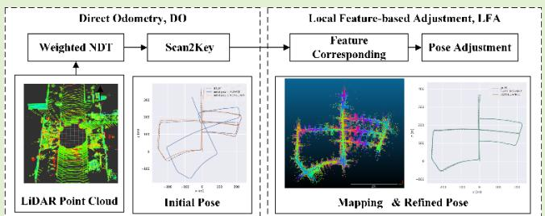</p>
<p>clouds and improve the accuracy. Cells of the NDT are weighted according to the range’s values and their surface characteristics, the new cost functions with weight are constructed. In the experiments, we tested NDT-LOAM on the KITTI odometry dataset and compared it with the state-of-the-art algorithm ALOAM/LOAM. NDT-LOAM had 0.899% average drift in translation, better than ALOAM and at the level of LOAM; moreover, NDT-LOAM can run at 10 Hz in real-time, while LOAM runs at 1 Hz. The results display that NDT-LOAM is a real-time and low-drift method with high accuracy. In addition, the source code is uploaded to GitHub and the download link is https://github.com/BurryChen/lv_slam.</p>
<p>— Simultaneous localization and mapping (SLAM), lidar odometry, normal distributions transform (NDT), real-time.</p>
<p>Manuscript received November 8, 2021; accepted December 6, 2021. Date of publication December 28, 2021; date of current version February 11, 2022. This work was supported in part by the National Natural Science Foundation of China under Grant 42101445 and in part by the China Postdoctoral Science Foundation under Grant 2021M702229. The associate editor coordinating the review of this article and approving it for publication was Dr. Abhishek K. Jha. (Corresponding author: Qingquan Li.)</p>
<p>Shoubin Chen is with the School of Architecture and Urban Planning, Shenzhen University, Shenzhen 518060, China, also with the Orbbec Research, Shenzhen 518052, China, also with the Institute of Urban Smart Transportation &amp; Safety Maintenance, Shenzhen University, Shenzhen 518060, China, and also with the Key Laboratory for Resilient Infrastructures of Coastal Cities, Shenzhen University, Ministry of Education, Shenzhen 518060, China (e-mail: shoubin.chen@whu.edu.cn).</p>
<p>Hao Ma is with the College of Computer Science and Software Engineering, Shenzhen University, Shenzhen 518060, China (e-mail: mahao_fido@szu.edu.cn).</p>
<p>Changhui Jiang is with the Department of Photogrammetry and Remote Sensing, Finnish Geospatial Research Institute (FGI), 02430 Masala, Finland (e-mail: changhui.jiang@nls.fi).</p>
<p>Baoding Zhou and Weixing Xue are with the Institute of Urban Smart Transportation &amp; Safety Maintenance, Shenzhen University, Shenzhen 518060, China, and also with the Key Laboratory for Resilient Infrastructures of Coastal Cities, Shenzhen University, Ministry of Education, Shenzhen 518060, China (e-mail: bdzhou@szu.edu.cn; weixingxue@whu.edu.cn).</p>
<p>Zhenzhong Xiao is with Orbbec Research, Shenzhen 518052, China (e-mail: xiaozhenzhong@orbbec.com).</p>
<p>Qingquan Li is with the School of Architecture and Urban Planning, Shenzhen University, Shenzhen 518060, China (e-mail: liqq@szu.edu.cn).</p>
<p>Digital Object Identifier 10.1109/JSEN.2021.3135055</p>
<h2>I. INTRODUCTION</h2>
<p>IMULTANEOUS Localization and Mapping (SLAM) S issue has been widely studied in the robotics community, the key is how to construct or update a map of an unknown environment while simultaneously keeping track of an agent’s location [1]–[3]. Typically, a SLAM system is divided into front-end and back-end parts; specifically, the front-end part is usually an odometry and the agent’s motion is estimated through process the measurements from the SLAM sensors (Camera or Lidar); the back-end accomplishes the map construction, and reduces accumulated drift by loop closure detection and map optimization [4]. SLAM technologies have been extensively investigated and employed in self-driving cars, unmanned aerial vehicles, planetary rovers, newer domestic robots, indoor localization system and even inside the human body [5]–[8]. According to the sensors utilized in the SLAM, it can be mainly divided into visual SLAM/ odometry [9]–[12] and Lidar SLAM/ odometry [13]–[20].</p>
<p>Visual SLAM processes the images sequences and estimates the agent’s motion and map the surrounded environment. The Visual SLAM approaches can be generally divided into two categories: indirect (feature-based) methods and direct methods [11]. Similarly, this concept can be extended to Lidar SLAM. Lidar SLAM processes the point clouds collected by Lidar and the motion is estimated thought the point clouds matching. Indirect Lidar SLAM methods previously compute correspondences of an intermediate representation from raw sensor measurements, and then estimate sensor motion by minimizing the re-projection error. The precomputation step of correspondences is typically solved by extracting and matching a sparse/dense set of key points (or feature points) and the parametric representations of other geometric primitives, such as line or curve segments. Direct methods skip this precomputation step and directly employ the sensor measurements (photometric measurements of cameras or geometric quantities of Lidars), jointly estimating motion and correspondences.</p>
<p>Compared with camera, Lidar can acquire huge-scale and high-accuracy measurements without being affected by the lighting conditions [21]. Lidar has become a vitally important sensor in SLAM applications recently. In this work we focus on Lidar Odometry, we present a real-time Lidar odometry (NDT-LOAM) using an improved weighted normal distributions transform (NDT) and a keyframe matching strategy. The cells in NDT are treated with different weights based on their ranges and surface features in the object function of NDT. A simple heuristic is further employed to select the ktyyframe. After compared with state-of-the-art method Lidar Odometry And Mapping (LOAM) [15], the proposed method shows a satisfactory performance on both efficiency and accuracy.</p>
<h2>II. RELATED WORK</h2>
<p>Lidar has obvious advantages in environment sensing, and it has attracted wide attention in SLAM. Researchers has published extensive works on Lidar SLAM including improving its efficiency, reducing the accumulated errors and map optimization. Before the popularity of Graph-based SLAM, Bayesian filter techniques is a method of choice for model acquisition in the Lidar SLAM community [22]. Bayesianbased SLAM treats the SLAM problem as a pose state estimation problem at a mobile measurement platform, such as Hector SLAM [23], Gmapping [24], etc. While continuously merging new observation data, it uses Extended Kalman Filter (EKF), Particle filter (PF) or Information Filter (IF) to enhance and update the pose state. Graph-based SLAM is also named full SLAM [25], and representative open source algorithms are Karto SLAM [24], cartographer [14], etc. It constructs a graph whose nodes correspond to the platform poses at different points in time and whose edges represent constraints between the poses obtained from observations, and then the map can be computed by finding the spatial configuration of the nodes that is mostly consistent with the measurements modeled by the edges [26].</p>
<p>For the recent advances of 3D Lidar SLAM with six degrees of freedom (6-DOF), we present three state-ofthe-art approaches: Cartographer, LOAM, and IMLS-SLAM. Google’s Cartographer [14] combines scan-to-submap matching with loop closure detection and graph optimization. Local submap trajectories are created using an algorithm called correlative scan matching (CSM). In the back-end, all scans are matched to nearby submaps using pixel-accurate CSM to create loop closure constraints. The constraint graph of submap and scan poses is periodically optimized in the backend. Because CSM is based on the probability grid without the pre-computed correspondence, Cartographer is a direct method. In this approach, loop closure detection and graph optimization can correct the accumulated error and improve the mapping accuracy. But these calculations are too time-consuming for limited CPU to correct location error in real-time.</p>
<p>LOAM developed by Carnegie Mellon University (CMU) have been ranked high on the KITTI odometry benchmark for several years. It divides the SLAM problem into two modules. One module performs odometry at a high frequency but with low accuracy to estimate velocity of the laser scanner. Although not necessary, if an IMU is available, it can provide a motion prior and mitigate for gross, high-frequency motion. A second module runs at a frequency of an order of magnitude lower for fine matching and registration of the point cloud. Specifically, the correspondences are previously found and determined in both modules, which extract feature points located on sharp edges and planar surfaces, and match the feature points to edge line segments and planar surface patches, respectively. Obviously, LOAM belongs to the feature-based methods. Combination of the two modules allows the map creation in real-time manner. However, to reach the possible maximum accuracy on the KITTI odometry benchmark, the Lidar mapping runs actually at the same frequency as the Lidar odometry and processes each individual scan, running at 1 HZ, 10% of the sensor’s real-time speed. Moreover, researchers have implemented some LOAM variants, including LeGO-LOAM [18] with ground-optimized process, LIO-SAM [19] with tightly-coupled Lidar inertial odometry, Loam_livox [18] with a solid-state Lidar Livox, R-LOAM [27] with point-tomesh features, F-LOAM<sup>1</sup>, A-LOAM<sup>2</sup> etc.</p>
<p>Recently, IMLS-SLAM [13] is an another low-drift SLAM algorithm based only on 3D Lidar data. It relies on a scanto-model matching framework. This direct method first uses a specific sampling strategy based on the Lidar scans, but does not build an explicit correspondence relationship. It then defines the model as the previous localized Lidar sweeps and use the Implicit Moving Least Squares (IMLS) surface representation. This approach needs 1.3s to finish each individual scan and cannot run in real time.</p>
<p>In the concept “Simultaneous Localization and Mapping”, the word “Simultaneous” specifically reveals the importance of the real-time processing for the odometry, the frontend of SLAM, while pursing the high localization accuracy. The above methods gain a higher odometry accuracy at the expense of more time consumption than the real-time processing. They cannot solve the contradiction between processing efficiency and localization accuracy. The NDT-LOAM in this paper aims to deal with the problems of accuracy and efficiency. It utilizes an improved weighted NDT and a keyframe matching strategy, and achieve a low-drift, real-time and state-of-the-art SLAM solution based on 3D Lidar data.</p>
<h2>III. METHODOLOGY</h2>
<p>A complete SLAM generally includes two parts: frontend odometry and back-end optimization. The paper focuses on the front-end, and presents an efficient Lidar odometry (NDT-LOAM). The system architecture is presented in Fig. 1, and it divides the SLAM front-end problem into two modules: direct odometry (DO) and local feature-based adjustment (LFA).</p>
<p><br />
Fig. 1. System overview of NDT-LOAM.</p>
<p>The DO module utilizes an improved weighted normal distributions transform (wNDT) and a keyframe matching strategy Scan2Key. The cells are distributed by different weights based on their ranges and dimensionality features in the object function of NDT. Further, a simple heuristic is employed to select the keyframe. In the original LOAM, feature points located on sharp edges and planar surfaces are extracted, and the feature points to edge line segments and planar surface patches are matched respectively. Obviously, original LOAM belongs to the feature-based methods. Differently, our odometry method utilizes the normal distributions transform (NDT) method instead of extracting feature points to the scans matching directly and efficiently in the odometry module, in other words, the NDT based odometry is named as direct odometry (DO) in Fig. 1.</p>
<p>The LFA module is similar to the mapping of the LOAM algorithm, and consists of two steps: feature corresponding, and pose adjustment. With the initial pose, the corner and surface features are processed and feature corresponding is established between the current frame and local point cloud map from the existing historical frames. Then, the pose adjustment refines the initial pose results from DO by optimize the cost functions from feature corresponding.</p>
<h2>A. Classical NDT</h2>
<p>NDT was firstly proposed by Biber and Straßer in 2003 [28] as a method for 2D scan registration, and then was described in detail for 3D point cloud by Martin Magnusson [29]. NDT maps and transforms a point cloud to a piecewise continuous function consisting of a set of local probability density functions (PDFs) of Gaussian normal distributions, each of which describes the surface shape in an occupied space cell (a square in the 2D case, or a cube in the 3D).</p>
<p>The Gaussian PDF in each cell can be interpreted as a generative process for the surface point p within a cell. In other words, it is originally assumed that the location of <math xmlns="http://www.w3.org/1998/Math/MathML" display="inline"><mrow><mi>p</mi></mrow></math> is drawn from this distribution. The mean <math xmlns="http://www.w3.org/1998/Math/MathML" display="inline"><mrow><mi>&#x003BC;</mi></mrow></math> and covariance - of the distribution are computed as</p>
<p><div class="math-block"><math xmlns="http://www.w3.org/1998/Math/MathML" display="block"><mrow><mi>&#x003BC;</mi><mo>&#x0003D;</mo><mfrac><mrow><mn>1</mn></mrow><mrow><mrow><mi mathvariant="normal">n</mi></mrow></mrow></mfrac><munderover><mo>&#x02211;</mo><mrow><mi>i</mi><mo>&#x0003D;</mo><mn>1</mn></mrow><mrow><mi>n</mi></mrow></munderover><msub><mi>P</mi><mrow><mi>i</mi></mrow></msub></mrow></math><span style="float:right;color:var(--ink-40)">(1)</span></div></p>
<p><div class="math-block"><math xmlns="http://www.w3.org/1998/Math/MathML" display="block"><mrow><mi>&#x003A3;</mi><mo>&#x0003D;</mo><mfrac><mrow><mn>1</mn></mrow><mrow><mi>n</mi><mo>&#x02212;</mo><mn>1</mn></mrow></mfrac><munderover><mo>&#x02211;</mo><mrow><mi>i</mi><mo>&#x0003D;</mo><mn>1</mn></mrow><mrow><mi>n</mi></mrow></munderover><mrow><mo stretchy="true" fence="true" form="prefix">&#x00028;</mo><msub><mi>P</mi><mrow><mi>i</mi></mrow></msub><mo>&#x02212;</mo><mi>&#x003BC;</mi><mo stretchy="true" fence="true" form="postfix">&#x00029;</mo></mrow><msup><mrow><mo stretchy="true" fence="true" form="prefix">&#x00028;</mo><msub><mi>P</mi><mrow><mi>i</mi></mrow></msub><mo>&#x02212;</mo><mi>&#x003BC;</mi><mo stretchy="true" fence="true" form="postfix">&#x00029;</mo></mrow><mrow><mi>T</mi></mrow></msup></mrow></math><span style="float:right;color:var(--ink-40)">(2)</span></div></p>
<p>where <math xmlns="http://www.w3.org/1998/Math/MathML" display="inline"><mrow><msub><mi>p</mi><mrow><mi>i</mi><mo>&#x0003D;</mo><mn>1</mn><mo>&#x0002C;</mo><mi>&#x02026;</mi><mo>&#x0002C;</mo><mi>n</mi></mrow></msub></mrow></math> are the positions of n point samples contained in a cell. The corresponding PDF is</p>
<p><div class="math-block"><math xmlns="http://www.w3.org/1998/Math/MathML" display="block"><mrow><mi>f</mi><mo stretchy="false">&#x00028;</mo><mi>x</mi><mo stretchy="false">&#x00029;</mo><mrow><mo>&#x0003D;</mo></mrow><mfrac><mrow><mn>1</mn></mrow><mrow><mo stretchy="false">&#x00028;</mo><mn>2</mn><mi>&#x003C0;</mi><msup><mo stretchy="false">&#x00029;</mo><mrow><mi>D</mi><mo>&#x0002F;</mo><mn>2</mn></mrow></msup><msqrt><mrow><mo stretchy="false">&#x0007C;</mo><mi>&#x003A3;</mi><mo stretchy="false">&#x0007C;</mo></mrow></msqrt></mrow></mfrac><mi>exp</mi><mrow><mo stretchy="true" fence="true" form="prefix">&#x00028;</mo><mo>&#x02212;</mo><mfrac><mrow><mo stretchy="false">&#x00028;</mo><msub><mi>P</mi><mrow><mi>i</mi></mrow></msub><mo>&#x02212;</mo><mi>&#x003BC;</mi><msup><mo stretchy="false">&#x00029;</mo><mrow><mi>T</mi></mrow></msup><msup><mi>&#x003A3;</mi><mrow><mo>&#x02212;</mo><mn>1</mn></mrow></msup><mo stretchy="false">&#x00028;</mo><msub><mi>P</mi><mrow><mi>i</mi></mrow></msub><mo>&#x02212;</mo><mi>&#x003BC;</mi><mo stretchy="false">&#x00029;</mo></mrow><mrow><mn>2</mn></mrow></mfrac><mo stretchy="true" fence="true" form="postfix">&#x00029;</mo></mrow></mrow></math><span style="float:right;color:var(--ink-40)">(3)</span></div></p>
<p>which also is the likelihood of having measured x in a D-dimensional coordinate system.</p>
<p>NDT registration is to estimate the rigid transformation parameter T between a pair of scans that maximizes the likelihood that points of the source scan lie on the target scan surface. The object function of NDT is</p>
<p><div class="math-block"><math xmlns="http://www.w3.org/1998/Math/MathML" display="block"><mrow><mtable><mtr><mtd columnalign="left"><mrow><mrow><mstyle displaystyle="true" scriptlevel="0"><mrow><mi>F</mi><mo stretchy="false">&#x00028;</mo><mi>&#x003BE;</mi><mo stretchy="false">&#x00029;</mo><mo>&#x0003D;</mo><msubsup><mo>&#x02211;</mo><mrow><mi>k</mi><mo>&#x0003D;</mo><mn>1</mn></mrow><mrow><mi>n</mi></mrow></msubsup><mi>f</mi><mo stretchy="false">&#x00028;</mo><mi>T</mi><mo stretchy="false">&#x00028;</mo><mi>&#x003BE;</mi><mo>&#x0002C;</mo><msub><mi>P</mi><mrow><mi>k</mi></mrow></msub><mo stretchy="false">&#x00029;</mo><mo stretchy="false">&#x00029;</mo><mo stretchy="false">&#x00029;</mo></mrow></mstyle></mrow><mtext>&#x000A0;</mtext><mtext>&#x000A0;</mtext></mrow></mtd></mtr><mtr><mtd columnalign="left"><mrow><mrow><mstyle displaystyle="true" scriptlevel="0"><mtext>&#x000A0;</mtext><mo>&#x0003D;</mo><msubsup><mo>&#x02211;</mo><mrow><mi>k</mi><mo>&#x0003D;</mo><mn>1</mn></mrow><mrow><mi>n</mi></mrow></msubsup><mo>&#x02212;</mo><msub><mi>d</mi><mrow><mn>1</mn></mrow></msub><mo>&#x000B7;</mo><mi>exp</mi><mrow><mo stretchy="true" fence="true" form="prefix">&#x00028;</mo><mo>&#x02212;</mo><mfrac><mrow><msub><mi>d</mi><mrow><mn>2</mn></mrow></msub></mrow><mrow><mn>2</mn></mrow></mfrac><msup><mrow><mo stretchy="true" fence="true" form="prefix">&#x00028;</mo><mi>T</mi><mo stretchy="false">&#x00028;</mo><mi>&#x003BE;</mi><mo>&#x0002C;</mo><msub><mi>P</mi><mrow><mi>k</mi></mrow></msub><mo stretchy="false">&#x00029;</mo><mo>&#x02212;</mo><msub><mi>&#x003BC;</mi><mrow><msub><mi>P</mi><mrow><mi>k</mi></mrow></msub></mrow></msub><mo stretchy="true" fence="true" form="postfix">&#x00029;</mo></mrow><mrow><mi>T</mi></mrow></msup><mo stretchy="true" fence="true" form="postfix" /></mrow></mstyle></mrow></mrow></mtd></mtr><mtr><mtd columnalign="left"><mrow><mrow><mstyle displaystyle="true" scriptlevel="0"><mtext>&#x000A0;</mtext><mrow><mo stretchy="true" fence="true" form="prefix" /><mtext>&#x000A0;</mtext><mo>&#x000D7;</mo><mtext>&#x000A0;</mtext><msup><mi>&#x003A3;</mi><mrow><mo>&#x02212;</mo><mn>1</mn></mrow></msup><mrow><mo stretchy="true" fence="true" form="prefix">&#x00028;</mo><mi>T</mi><mo stretchy="false">&#x00028;</mo><mi>&#x003BE;</mi><mo>&#x0002C;</mo><msub><mi>P</mi><mrow><mi>k</mi></mrow></msub><mo stretchy="false">&#x00029;</mo><mo>&#x02212;</mo><msub><mi>&#x003BC;</mi><mrow><msub><mi>P</mi><mrow><mi>k</mi></mrow></msub></mrow></msub><mo stretchy="true" fence="true" form="postfix">&#x00029;</mo></mrow><mo stretchy="true" fence="true" form="postfix">&#x00029;</mo></mrow></mstyle></mrow></mrow></mtd></mtr></mtable></mrow></math><span style="float:right;color:var(--ink-40)">(4)</span></div></p>
<p><div class="math-block"><math xmlns="http://www.w3.org/1998/Math/MathML" display="block"><mrow><mi>T</mi><mo stretchy="false">&#x00028;</mo><mi>&#x003BE;</mi><mo>&#x0002C;</mo><msub><mi>P</mi><mrow><mi>k</mi></mrow></msub><mo stretchy="false">&#x00029;</mo><mo>&#x0003D;</mo><mi>exp</mi><mo stretchy="false">&#x00028;</mo><msup><mi>&#x003BE;</mi><mrow><mo>&#x02227;</mo></mrow></msup><mo stretchy="false">&#x00029;</mo><mo>&#x000B7;</mo><msub><mi>P</mi><mrow><mi>k</mi></mrow></msub><mo>&#x0003D;</mo><mi>R</mi><msub><mi>P</mi><mrow><mi>k</mi></mrow></msub><mo>&#x0002B;</mo><mi>t</mi></mrow></math><span style="float:right;color:var(--ink-40)">(5)</span></div></p>
<p>where <math xmlns="http://www.w3.org/1998/Math/MathML" display="inline"><mrow><msub><mi>&#x003BC;</mi><mrow><msub><mi>P</mi><mrow><mi>k</mi></mrow></msub></mrow></msub></mrow></math> is the mean value of the cell that <math xmlns="http://www.w3.org/1998/Math/MathML" display="inline"><mrow><msub><mi>P</mi><mrow><mi>k</mi></mrow></msub></mrow></math> belongs to. <math xmlns="http://www.w3.org/1998/Math/MathML" display="inline"><mrow><mi>T</mi><mo stretchy="false">&#x00028;</mo><mi>&#x003BE;</mi><mo>&#x0002C;</mo><msub><mi>P</mi><mrow><mi>k</mi></mrow></msub><mo stretchy="false">&#x00029;</mo></mrow></math> is to transform the point <math xmlns="http://www.w3.org/1998/Math/MathML" display="inline"><mrow><msub><mi>P</mi><mrow><mi>k</mi></mrow></msub></mrow></math> with the transformation matrix composed of the rotation matrix <math xmlns="http://www.w3.org/1998/Math/MathML" display="inline"><mrow><mtext mathvariant="bold">&#x000A0;R&#x000A0;</mtext><mo>&#x02208;</mo><mtext>&#x000A0;</mtext><mi>S</mi><mrow><mi mathvariant="normal">O</mi></mrow><mo stretchy="false">&#x00028;</mo><mn>3</mn><mo stretchy="false">&#x00029;</mo></mrow></math> and translation vector <math xmlns="http://www.w3.org/1998/Math/MathML" display="inline"><mrow><mi>t</mi><mo>&#x0003D;</mo><mo stretchy="false">[</mo><msub><mi>t</mi><mrow><mrow><mi mathvariant="normal">x</mi></mrow></mrow></msub><mo>&#x0002C;</mo><msub><mi>t</mi><mrow><mrow><mi mathvariant="normal">y</mi></mrow></mrow></msub><mo>&#x0002C;</mo><msub><mi>t</mi><mrow><mrow><mi mathvariant="normal">z</mi></mrow></mrow></msub><mo stretchy="false">]</mo></mrow></math> . In SE(3), the transformation matrix T composed of R and t can be encoded using the six-dimensional parameter vector $\xi = \bigl [ \mathrm { t _ { x } , t _ { y } , t _ { z } , } \varphi _ { \mathrm { x } } , \varphi _ { \mathrm { y } } , \varphi _ { \mathrm { z } } \bigr ] \mathrm { . }<math xmlns="http://www.w3.org/1998/Math/MathML" display="inline"><mrow><mi>w</mi><mi>h</mi><mi>e</mi><mi>r</mi><mi>e</mi></mrow></math>\varphi _ { \mathrm { x } } , \varphi _ { \mathrm { y } } , \varphi _ { \mathrm { z } }<math xmlns="http://www.w3.org/1998/Math/MathML" display="inline"><mrow><mi>a</mi><mi>r</mi><mi>e</mi><mi>t</mi><mi>h</mi><mi>e</mi><mi>E</mi><mi>u</mi><mi>l</mi><mi>e</mi><mi>r</mi><mi>a</mi><mi>n</mi><mi>g</mi><mi>l</mi><mi>e</mi><mi>s</mi><mi>o</mi><mi>r</mi><mi>a</mi><mi>r</mi><mi>o</mi><mi>t</mi><mi>a</mi><mi>t</mi><mi>i</mi><mi>o</mi><mi>n</mi><mi>v</mi><mi>e</mi><mi>c</mi><mi>t</mi><mi>o</mi><mi>r</mi><mi>c</mi><mi>o</mi><mi>r</mi><mi>r</mi><mi>e</mi><mi>s</mi><mi>p</mi><mi>o</mi><mi>n</mi><mi>d</mi><mi>i</mi><mi>n</mi><mi>g</mi><mi>t</mi><mi>o</mi><mi>t</mi><mi>h</mi><mi>e</mi><mi>r</mi><mi>o</mi><mi>t</mi><mi>a</mi><mi>t</mi><mi>i</mi><mi>o</mi><mi>n</mi><mi>m</mi><mi>a</mi><mi>t</mi><mi>r</mi><mi>i</mi><mi>x</mi><mi>R</mi><mo>&#x0002E;</mo><mi>T</mi><mi>h</mi><mi>e</mi><mi>p</mi><mi>a</mi><mi>r</mi><mi>a</mi><mi>m</mi><mi>e</mi><mi>t</mi><mi>e</mi><mi>r</mi><mi>s</mi></mrow></math>d _ { 1 } , d _ { 2 } \mathrm { c a n }<math xmlns="http://www.w3.org/1998/Math/MathML" display="inline"><mrow><mi>b</mi><mi>e</mi><mi>c</mi><mi>a</mi><mi>l</mi><mi>c</mi><mi>u</mi><mi>l</mi><mi>a</mi><mi>t</mi><mi>e</mi><mi>d</mi><mi>b</mi><mi>y</mi><mi>t</mi><mi>h</mi><mi>e</mi><mi>o</mi><mi>u</mi><mi>t</mi><mi>l</mi><mi>i</mi><mi>e</mi><mi>r</mi><mi>s</mi><mi>c</mi><mi>o</mi><mi>n</mi><mi>s</mi><mi>t</mi><mi>a</mi><mi>n</mi><mi>t</mi><mi>s</mi></mrow></math>c _ { 1 } , c _ { 2 }$ , and they are expressed as [29]</p>
<p><div class="math-block"><math xmlns="http://www.w3.org/1998/Math/MathML" display="block"><mrow><mtable><mtr><mtd columnalign="right" /><mtd columnalign="left"><mrow><msub><mi>d</mi><mrow><mn>3</mn></mrow></msub><mo>&#x0003D;</mo><mo>&#x02212;</mo><mi>log</mi><mrow><mo stretchy="true" fence="true" form="prefix">&#x00028;</mo><msub><mi>c</mi><mrow><mn>2</mn></mrow></msub><mo stretchy="true" fence="true" form="postfix">&#x00029;</mo></mrow><mo>&#x0002C;</mo></mrow></mtd></mtr><mtr><mtd columnalign="right" /><mtd columnalign="left"><mrow><msub><mi>d</mi><mrow><mn>1</mn></mrow></msub><mo>&#x0003D;</mo><mo>&#x02212;</mo><mi>log</mi><mrow><mo stretchy="true" fence="true" form="prefix">&#x00028;</mo><msub><mi>c</mi><mrow><mn>1</mn></mrow></msub><mo>&#x0002B;</mo><msub><mi>c</mi><mrow><mn>2</mn></mrow></msub><mo stretchy="true" fence="true" form="postfix">&#x00029;</mo></mrow><mo>&#x02212;</mo><msub><mi>d</mi><mrow><mn>3</mn></mrow></msub><mo>&#x0002C;</mo></mrow></mtd></mtr><mtr><mtd columnalign="right" /><mtd columnalign="left"><mrow><msub><mi>d</mi><mrow><mn>2</mn></mrow></msub><mo>&#x0003D;</mo><mo>&#x02212;</mo><mn>2</mn><mi>log</mi><mrow><mo stretchy="true" fence="true" form="prefix">&#x00028;</mo><mo stretchy="false">&#x00028;</mo><mo>&#x02212;</mo><mi>log</mi><mrow><mo stretchy="true" fence="true" form="prefix">&#x00028;</mo><msub><mi>c</mi><mrow><mn>1</mn></mrow></msub><mi>exp</mi><mo stretchy="false">&#x00028;</mo><mo>&#x02212;</mo><mn>1</mn><mo>&#x0002F;</mo><mn>2</mn><mo stretchy="false">&#x00029;</mo><mo>&#x0002B;</mo><msub><mi>c</mi><mrow><mn>2</mn></mrow></msub><mo stretchy="true" fence="true" form="postfix">&#x00029;</mo></mrow><mo>&#x02212;</mo><msub><mi>d</mi><mrow><mn>3</mn></mrow></msub><mo stretchy="false">&#x00029;</mo><mo>&#x0002F;</mo><msub><mi>d</mi><mrow><mn>1</mn></mrow></msub><mo stretchy="true" fence="true" form="postfix">&#x00029;</mo></mrow><mo>&#x0002E;</mo></mrow></mtd></mtr></mtable></mrow></math><span style="float:right;color:var(--ink-40)">(6)</span></div></p>
<h2>B. Weighted NDT</h2>
<p>In Classical NDT, all cells having enough points are equally weighted to build the registration objective function. In fact, the cells with different ranges and different dimensionality features have different effects on calculating the transformation parameters [15].</p>
<p>Firstly, we discuss the relationship between the long measurement range and the weight. For a long measurement range comparing one nearby the sensor center, the same rotation error can cause more significant distortions in the point cloud, which means that the longer the distance, the stronger the constraint. Therefore, we introduce a range weight <math xmlns="http://www.w3.org/1998/Math/MathML" display="inline"><mrow><msub><mrow><mi mathvariant="bold">W</mi></mrow><mrow><mi>&#x00393;</mi></mrow></msub></mrow></math></p>
<p><div class="math-block"><math xmlns="http://www.w3.org/1998/Math/MathML" display="block"><mrow><mi>W</mi><msub><mi>r</mi><mrow><mi>k</mi></mrow></msub><mo>&#x0003D;</mo><mo stretchy="false">&#x0007C;</mo><msub><mi>x</mi><mrow><mi>k</mi></mrow></msub><mo stretchy="false">&#x0007C;</mo><mo>&#x0002E;</mo></mrow></math><span style="float:right;color:var(--ink-40)">(7)</span></div></p>
<p>where k is the index of the point.</p>
<p>Secondly, the NDT can also be described as a method for compactly representing a surface. The transformation maps a point cloud to a smooth surface representation, described as a set of local PDFs. Each PDF with the mean <math xmlns="http://www.w3.org/1998/Math/MathML" display="inline"><mrow><mi>&#x003BC;</mi></mrow></math> and covariance - describes the shape and dimensionality feature of a local surface in a cell.</p>
<p>The covariance - in each cell is a symmetric positive definite matrix, and it can be conducted an eigenvalue decomposition for the eigenvectors and eigenvalues. The eigenvalues are positive and ordered so that <math xmlns="http://www.w3.org/1998/Math/MathML" display="inline"><mrow><msub><mi>&#x003BB;</mi><mrow><mn>1</mn></mrow></msub><mo>&#x02265;</mo><msub><mi>&#x003BB;</mi><mrow><mn>2</mn></mrow></msub><mo>&#x02265;</mo><msub><mi>&#x003BB;</mi><mrow><mn>3</mn></mrow></msub><mo>&#x0003E;</mo><mn>0</mn></mrow></math> Various geometrical parameters can be derived from the eigenvalues and eigenvectors of the covariance matrix -. Several indicators have already been proposed in [30], and the following indicators have been selected to express the linear, planar, and spherical indices within a cell [31]:</p>
<p><div class="math-block"><math xmlns="http://www.w3.org/1998/Math/MathML" display="block"><mrow><mtable><mtr><mtd columnalign="right" /><mtd columnalign="left"><mrow><mo>&#x02200;</mo><mi>j</mi><mo>&#x02208;</mo><mo stretchy="false">[</mo><mn>1</mn><mo>&#x0002C;</mo><mn>3</mn><mo stretchy="false">]</mo><mo>&#x0002C;</mo><msub><mi>&#x003C3;</mi><mrow><mi>j</mi></mrow></msub><mo>&#x0003D;</mo><msqrt><mrow><msub><mi>&#x003BB;</mi><mrow><mi>j</mi></mrow></msub></mrow></msqrt></mrow></mtd></mtr><mtr><mtd columnalign="right" /><mtd columnalign="left"><mrow><msub><mi>a</mi><mrow><mn>1</mn><mi>D</mi></mrow></msub><mo>&#x0003D;</mo><mfrac><mrow><msub><mi>&#x003C3;</mi><mrow><mn>1</mn></mrow></msub><mo>&#x02212;</mo><msub><mi>&#x003C3;</mi><mrow><mn>2</mn></mrow></msub></mrow><mrow><msub><mi>&#x003C3;</mi><mrow><mn>1</mn></mrow></msub></mrow></mfrac></mrow></mtd></mtr><mtr><mtd columnalign="right" /><mtd columnalign="left"><mrow><msub><mi>a</mi><mrow><mn>2</mn><mi>D</mi></mrow></msub><mo>&#x0003D;</mo><mfrac><mrow><msub><mi>&#x003C3;</mi><mrow><mn>2</mn></mrow></msub><mo>&#x02212;</mo><msub><mi>&#x003C3;</mi><mrow><mn>3</mn></mrow></msub></mrow><mrow><msub><mi>&#x003C3;</mi><mrow><mn>1</mn></mrow></msub></mrow></mfrac></mrow></mtd></mtr><mtr><mtd columnalign="right" /><mtd columnalign="left"><mrow><msub><mi>a</mi><mrow><mn>3</mn><mi>D</mi></mrow></msub><mo>&#x0003D;</mo><mfrac><mrow><msub><mi>&#x003C3;</mi><mrow><mn>3</mn></mrow></msub></mrow><mrow><msub><mi>&#x003C3;</mi><mrow><mn>1</mn></mrow></msub></mrow></mfrac></mrow></mtd></mtr></mtable></mrow></math><span style="float:right;color:var(--ink-40)">(8)</span></div></p>
<p>and, the dimensionality index (1D, 2D or 3D) of a cell is defined by:</p>
<p><div class="math-block"><math xmlns="http://www.w3.org/1998/Math/MathML" display="block"><mrow><msup><mi>d</mi><mrow><mo>&#x0002A;</mo></mrow></msup><mo>&#x0003D;</mo><munder><mrow><mi>\arg</mi><mo movablelimits="true">max</mo></mrow><mrow><mi>d</mi><mo>&#x02208;</mo><mo stretchy="false">[</mo><mn>1</mn><mo>&#x0002C;</mo><mn>3</mn><mo stretchy="false">]</mo></mrow></munder><mo stretchy="false">[</mo><msub><mi>a</mi><mrow><mi>d</mi><mi>D</mi></mrow></msub><mo stretchy="false">]</mo></mrow></math><span style="float:right;color:var(--ink-40)">(9)</span></div></p>
<p>The cells with different dimensionality indices have different impacts on NDT [13]. The more similar the local surface is to the 2D plane, the more accurate the local PDF reflects the true physical surface in point cloud. Therefore, the cells with higher planar index or 2D feature contribute more to NDT registration, which deserves a higher weight. Because of the sparse of the point cloud, it is possible that just one scan line is located in several cells. These cells with linear behavior or 1D feature cannot present the physical surface accurately and should be distributed less weight. The weight ratio of the 1D, 2D and 3D feature cells is obtained from experience, and the results achieve higher accuracy when the weights are set as follows:</p>
<p><div class="math-block"><math xmlns="http://www.w3.org/1998/Math/MathML" display="block"><mrow><mi>W</mi><mi>D</mi><mo>&#x0003D;</mo><mrow><mo stretchy="true" fence="true" form="prefix">&#x0007B;</mo><mtable><mtr><mtd columnalign="left"><mrow><mrow><mn>1</mn><mo>&#x0002E;</mo><mn>2</mn><mn>5</mn><mo stretchy="false">&#x00028;</mo><msup><mi>d</mi><mrow><mo>&#x0002A;</mo></mrow></msup><mo>&#x0003D;</mo><mn>2</mn><mo stretchy="false">&#x00029;</mo></mrow></mrow></mtd></mtr><mtr><mtd columnalign="left"><mrow><mrow><mn>1</mn><mo>&#x0002E;</mo><mn>0</mn><mo stretchy="false">&#x00028;</mo><msup><mi>d</mi><mrow><mo>&#x0002A;</mo></mrow></msup><mo>&#x0003D;</mo><mn>3</mn><mo stretchy="false">&#x00029;</mo></mrow></mrow></mtd></mtr><mtr><mtd columnalign="left"><mrow><mrow><mn>0</mn><mo>&#x0002E;</mo><mn>7</mn><mn>5</mn><mo stretchy="false">&#x00028;</mo><msup><mi>d</mi><mrow><mo>&#x0002A;</mo></mrow></msup><mo>&#x0003D;</mo><mn>1</mn><mo stretchy="false">&#x00029;</mo></mrow></mrow></mtd></mtr></mtable><mo stretchy="true" fence="true" form="postfix" /></mrow></mrow></math><span style="float:right;color:var(--ink-40)">(10)</span></div></p>
<p>Therefore, the object function of weighted NDT is</p>
<p><div class="math-block"><math xmlns="http://www.w3.org/1998/Math/MathML" display="block"><mrow><mtable><mtr><mtd columnalign="left"><mrow><mrow><mstyle displaystyle="true" scriptlevel="0"><mrow><mi mathvariant="script">F</mi></mrow><mo stretchy="false">&#x00028;</mo><mi>&#x003BE;</mi><mo stretchy="false">&#x00029;</mo><mo>&#x0003D;</mo><msubsup><mo>&#x02211;</mo><mrow><mi>k</mi><mo>&#x0003D;</mo><mn>1</mn></mrow><mrow><mi>n</mi></mrow></msubsup><msub><mi>W</mi><mrow><mi>k</mi></mrow></msub><mo>&#x000B7;</mo><mi>f</mi><mo stretchy="false">&#x00028;</mo><mi>T</mi><mo stretchy="false">&#x00028;</mo><mi>&#x003BE;</mi><mo>&#x0002C;</mo><msub><mi>P</mi><mrow><mi>k</mi></mrow></msub><mo stretchy="false">&#x00029;</mo><mo stretchy="false">&#x00029;</mo></mstyle></mrow></mrow></mtd></mtr><mtr><mtd columnalign="left"><mrow><mrow><mstyle displaystyle="true" scriptlevel="0"><mtext>&#x000A0;</mtext><mo>&#x0003D;</mo><mo>&#x02212;</mo><msub><mi>W</mi><mrow><mi>k</mi></mrow></msub><msub><mi>d</mi><mrow><mn>1</mn></mrow></msub><msubsup><mo>&#x02211;</mo><mrow><mi>k</mi><mo>&#x0003D;</mo><mn>1</mn></mrow><mrow><mi>n</mi></mrow></msubsup><mi>exp</mi><mrow><mo stretchy="true" fence="true" form="prefix">&#x00028;</mo><mo>&#x02212;</mo><mfrac><mrow><msub><mi>d</mi><mrow><mn>2</mn></mrow></msub></mrow><mrow><mn>2</mn></mrow></mfrac><msup><mrow><mo stretchy="true" fence="true" form="prefix">&#x00028;</mo><mi>T</mi><mo stretchy="false">&#x00028;</mo><mi>&#x003BE;</mi><mo>&#x0002C;</mo><msub><mi>P</mi><mrow><mi>k</mi></mrow></msub><mo stretchy="false">&#x00029;</mo><mo>&#x02212;</mo><msub><mi>&#x003BC;</mi><mrow><msub><mi>P</mi><mrow><mi>k</mi></mrow></msub></mrow></msub><mo stretchy="true" fence="true" form="postfix">&#x00029;</mo></mrow><mrow><mi>T</mi></mrow></msup><mo stretchy="true" fence="true" form="postfix" /></mrow></mstyle></mrow></mrow></mtd></mtr></mtable></mrow></math></div></p>
<p><div class="math-block"><math xmlns="http://www.w3.org/1998/Math/MathML" display="block"><mrow><mo>&#x000D7;</mo><mtext>&#x000A0;</mtext><msup><mi>&#x003A3;</mi><mrow><mo>&#x02212;</mo><mn>1</mn></mrow></msup><mrow><mo stretchy="true" fence="true" form="prefix">&#x00028;</mo><mi>T</mi><mo stretchy="false">&#x00028;</mo><mi>&#x003BE;</mi><mo>&#x0002C;</mo><msub><mi>P</mi><mrow><mi>k</mi></mrow></msub><mo stretchy="false">&#x00029;</mo><mo>&#x02212;</mo><msub><mi>&#x003BC;</mi><mrow><msub><mi>P</mi><mrow><mi>k</mi></mrow></msub></mrow></msub><mo stretchy="true" fence="true" form="postfix">&#x00029;</mo></mrow><mo minsize="2.470em" maxsize="2.470em">)</mo></mrow></math><span style="float:right;color:var(--ink-40)">(11)</span></div></p>
<p><div class="math-block"><math xmlns="http://www.w3.org/1998/Math/MathML" display="block"><mrow><msub><mi>W</mi><mrow><mi>k</mi></mrow></msub><mo>&#x0003D;</mo><mi>W</mi><msub><mi>r</mi><mrow><mi>k</mi></mrow></msub><mo>&#x000B7;</mo><mi>W</mi><msub><mi>D</mi><mrow><mi>k</mi></mrow></msub></mrow></math><span style="float:right;color:var(--ink-40)">(12)</span></div></p>
<p>For brevity, let <math xmlns="http://www.w3.org/1998/Math/MathML" display="inline"><mrow><msubsup><mi>P</mi><mrow><mi>k</mi></mrow><mrow><mi>&#x02032;</mi></mrow></msubsup><mo>&#x02261;</mo><mi>T</mi><mo stretchy="false">&#x00028;</mo><mi>&#x003BE;</mi><mo>&#x0002C;</mo><msub><mi>P</mi><mrow><mi>k</mi></mrow></msub><mo stretchy="false">&#x00029;</mo><mo>&#x02212;</mo><msub><mi>&#x003BC;</mi><mrow><msub><mi>P</mi><mrow><mi>k</mi></mrow></msub></mrow></msub></mrow></math> . In other words, <math xmlns="http://www.w3.org/1998/Math/MathML" display="inline"><mrow><msubsup><mi>P</mi><mrow><mi>k</mi></mrow><mrow><mi>&#x02032;</mi></mrow></msubsup></mrow></math> is the different between the value of the point <math xmlns="http://www.w3.org/1998/Math/MathML" display="inline"><mrow><msub><mi>P</mi><mrow><mi>k</mi></mrow></msub></mrow></math> after transformed by the current pose parameters and the center of the cell which the point belongs to. The entries of the gradient vector <math xmlns="http://www.w3.org/1998/Math/MathML" display="inline"><mrow><mi>g</mi></mrow></math> is</p>
<p><div class="math-block"><math xmlns="http://www.w3.org/1998/Math/MathML" display="block"><mrow><mtable><mtr><mtd columnalign="left"><mrow><mrow><mstyle displaystyle="true" scriptlevel="0"><msub><mi>g</mi><mrow><mi>i</mi></mrow></msub><mo>&#x0003D;</mo><mfrac><mrow><mi>&#x003B4;</mi><mi>F</mi></mrow><mrow><mi>&#x003B4;</mi><msub><mi>&#x003BE;</mi><mrow><mi>i</mi></mrow></msub></mrow></mfrac></mstyle></mrow></mrow></mtd></mtr><mtr><mtd columnalign="left"><mrow><mrow><mstyle displaystyle="true" scriptlevel="0"><mspace width="1em" /><mo>&#x0003D;</mo><msubsup><mo>&#x02211;</mo><mrow><mi>k</mi><mo>&#x0003D;</mo><mn>1</mn></mrow><mrow><mi>n</mi></mrow></msubsup><msub><mi>W</mi><mrow><mi>k</mi></mrow></msub><msub><mi>d</mi><mrow><mn>1</mn></mrow></msub><msub><mi>d</mi><mrow><mn>2</mn></mrow></msub><mo>&#x000B7;</mo><msubsup><mi>P</mi><mrow><mi>k</mi></mrow><mrow><msup><mi /><mi>&#x02032;</mi></msup></mrow></msubsup><msubsup><mi>&#x003A3;</mi><mrow><mi>k</mi></mrow><mrow><mo>&#x02212;</mo><mn>1</mn></mrow></msubsup><mfrac><mrow><mi>&#x003B4;</mi><msup><mi>P</mi><mrow><mi>&#x02032;</mi></mrow></msup></mrow><mrow><mi>&#x003B4;</mi><msub><mi>&#x003BE;</mi><mrow><mi>i</mi></mrow></msub></mrow></mfrac><mi>exp</mi><mrow><mo stretchy="true" fence="true" form="prefix">&#x00028;</mo><mo>&#x02212;</mo><mfrac><mrow><msub><mi>d</mi><mrow><mn>2</mn></mrow></msub></mrow><mrow><mn>2</mn></mrow></mfrac><msup><mrow><msubsup><mi>P</mi><mrow><mi>k</mi></mrow><mrow><mi>&#x02032;</mi></mrow></msubsup></mrow><mrow><mi>T</mi></mrow></msup><msubsup><mi>&#x003A3;</mi><mrow><mi>k</mi></mrow><mrow><mo>&#x02212;</mo><mn>1</mn></mrow></msubsup><msubsup><mi>P</mi><mrow><mi>k</mi></mrow><mrow><msup><mi /><mi>&#x02032;</mi></msup></mrow></msubsup><mo stretchy="true" fence="true" form="postfix">&#x00029;</mo></mrow></mstyle></mrow></mrow></mtd></mtr></mtable></mrow></math><span style="float:right;color:var(--ink-40)">(13)</span></div></p>
<p>The entries of the Hessian matrix H are</p>
<p><div class="math-block"><math xmlns="http://www.w3.org/1998/Math/MathML" display="block"><mrow><mtable><mtr><mtd columnalign="left"><mrow><mrow><msub><mi>H</mi><mrow><mi>i</mi><mi>j</mi></mrow></msub><mo>&#x0003D;</mo><mrow><mfrac><mrow><msup><mi>&#x003B4;</mi><mrow><mn>2</mn></mrow></msup><mi>F</mi></mrow><mrow><mi>&#x003B4;</mi><msub><mi>&#x003BE;</mi><mrow><mi>i</mi></mrow></msub><mi>&#x003B4;</mi><msub><mi>&#x003BE;</mi><mrow><mi>j</mi></mrow></msub></mrow></mfrac></mrow></mrow></mrow></mtd></mtr><mtr><mtd columnalign="left"><mrow><mrow><mtext>&#x000A0;</mtext></mrow></mrow></mtd></mtr><mtr><mtd columnalign="left"><mrow><mrow><mstyle displaystyle="true" scriptlevel="0"><mspace width="1em" /><mo>&#x0003D;</mo><msubsup><mo>&#x02211;</mo><mrow><mi>k</mi><mo>&#x0003D;</mo><mn>1</mn></mrow><mrow><mi>n</mi></mrow></msubsup><msub><mi>W</mi><mrow><mi>k</mi></mrow></msub><msub><mi>d</mi><mrow><mn>1</mn></mrow></msub><msub><mi>d</mi><mrow><mn>2</mn></mrow></msub><mo>&#x000B7;</mo><mi>exp</mi><mrow><mo stretchy="true" fence="true" form="prefix">&#x00028;</mo><mo>&#x02212;</mo><mrow><mfrac><mrow><msub><mi>d</mi><mrow><mn>2</mn></mrow></msub></mrow><mrow><mn>2</mn></mrow></mfrac></mrow><msubsup><mrow><mi>P</mi></mrow><mrow><mi>k</mi></mrow><mrow><mrow><mrow><msup><mi mathvariant="normal" /><mi mathvariant="normal">&#x02032;</mi></msup><mi mathvariant="normal">T</mi></mrow></mrow></mrow></msubsup><msubsup><mi>&#x003A3;</mi><mrow><mi>k</mi></mrow><mrow><mo>&#x02212;</mo><mn>1</mn></mrow></msubsup><msubsup><mi>P</mi><mrow><mi>k</mi></mrow><mrow><mrow><msup><mi mathvariant="normal" /><mi mathvariant="normal">&#x02032;</mi></msup></mrow></mrow></msubsup><mo stretchy="true" fence="true" form="postfix">&#x00029;</mo></mrow></mstyle></mrow></mrow></mtd></mtr><mtr><mtd columnalign="left"><mrow><mrow><mtext>&#x000A0;</mtext><mo>&#x000B7;</mo><mo stretchy="false">&#x00028;</mo><mo>&#x02212;</mo><msub><mi>d</mi><mrow><mn>2</mn></mrow></msub><mo stretchy="false">&#x00028;</mo><msubsup><mrow><mi>P</mi></mrow><mrow><mi>k</mi></mrow><mrow><mrow><mrow><msup><mi mathvariant="normal" /><mi mathvariant="normal">&#x02032;</mi></msup><mi mathvariant="normal">T</mi></mrow></mrow></mrow></msubsup><msubsup><mi>&#x003A3;</mi><mrow><mi>k</mi></mrow><mrow><mo>&#x02212;</mo><mn>1</mn></mrow></msubsup><mrow><mfrac><mrow><mi>&#x003B4;</mi><msubsup><mi>P</mi><mrow><mi>k</mi></mrow><mrow><mi>&#x02032;</mi></mrow></msubsup></mrow><mrow><mi>&#x003B4;</mi><msub><mi>&#x003BE;</mi><mrow><mi>i</mi></mrow></msub></mrow></mfrac></mrow><mo stretchy="false">&#x00029;</mo><mo stretchy="false">&#x00028;</mo><msubsup><mrow><mi>P</mi></mrow><mrow><mi>k</mi></mrow><mrow><mrow><mrow><msup><mi mathvariant="normal" /><mi mathvariant="normal">&#x02032;</mi></msup><mi mathvariant="normal">T</mi></mrow></mrow></mrow></msubsup><msubsup><mi>&#x003A3;</mi><mrow><mi>k</mi></mrow><mrow><mo>&#x02212;</mo><mn>1</mn></mrow></msubsup><mrow><mfrac><mrow><mi>&#x003B4;</mi><msubsup><mi>P</mi><mrow><mi>k</mi></mrow><mrow><mi>&#x02032;</mi></mrow></msubsup></mrow><mrow><mi>&#x003B4;</mi><msub><mi>&#x003BE;</mi><mrow><mi>j</mi></mrow></msub></mrow></mfrac></mrow><mo stretchy="false">&#x00029;</mo></mrow></mrow></mtd></mtr><mtr><mtd columnalign="left"><mrow><mrow><mtext>&#x000A0;</mtext><mstyle displaystyle="true" scriptlevel="0"><mspace width="1em" /><mo>&#x0002B;</mo><msubsup><mrow><mi>P</mi></mrow><mrow><mi>k</mi></mrow><mrow><mrow><mrow><msup><mi mathvariant="normal" /><mi mathvariant="normal">&#x02032;</mi></msup><mi mathvariant="normal">T</mi></mrow></mrow></mrow></msubsup><msubsup><mi>&#x003A3;</mi><mrow><mi>k</mi></mrow><mrow><mo>&#x02212;</mo><mn>1</mn></mrow></msubsup><mrow><mfrac><mrow><msup><mi>&#x003B4;</mi><mrow><mn>2</mn></mrow></msup><msubsup><mi>P</mi><mrow><mi>k</mi></mrow><mrow><mi>&#x02032;</mi></mrow></msubsup></mrow><mrow><mi>&#x003B4;</mi><msub><mi>&#x003BE;</mi><mrow><mi>i</mi></mrow></msub><mi>&#x003B4;</mi><msub><mi>&#x003BE;</mi><mrow><mi>j</mi></mrow></msub></mrow></mfrac></mrow><mo>&#x0002B;</mo><mrow><mfrac><mrow><mi>&#x003B4;</mi><msubsup><mi>P</mi><mrow><mi>k</mi></mrow><mrow><mrow><mrow><msup><mi mathvariant="normal" /><mi mathvariant="normal">&#x02032;</mi></msup><mi mathvariant="normal">T</mi></mrow></mrow></mrow></msubsup></mrow><mrow><mi>&#x003B4;</mi><msub><mi>&#x003BE;</mi><mrow><mi>j</mi></mrow></msub></mrow></mfrac></mrow><msubsup><mi>&#x003A3;</mi><mrow><mi>k</mi></mrow><mrow><mo>&#x02212;</mo><mn>1</mn></mrow></msubsup><mrow><mfrac><mrow><mi>&#x003B4;</mi><msubsup><mi>P</mi><mrow><mi>k</mi></mrow><mrow><mi>&#x02032;</mi></mrow></msubsup></mrow><mrow><mi>&#x003B4;</mi><msub><mi>&#x003BE;</mi><mrow><mi>i</mi></mrow></msub></mrow></mfrac></mrow><mo stretchy="false">&#x00029;</mo></mstyle></mrow></mrow></mtd></mtr></mtable></mrow></math><span style="float:right;color:var(--ink-40)">(14)</span></div></p>
<p>The parameter <math xmlns="http://www.w3.org/1998/Math/MathML" display="inline"><mrow><mi>&#x003BE;</mi></mrow></math> can be solved through nonlinear iterations of the Newton method with line search [32] by maximizing the object function (8),</p>
<p><div class="math-block"><math xmlns="http://www.w3.org/1998/Math/MathML" display="block"><mrow><mi>&#x003BE;</mi><mi>&#x003BE;</mi><mo>&#x02212;</mo><mi>&#x003B1;</mi><msup><mi>H</mi><mrow><mo>&#x02212;</mo><mn>1</mn></mrow></msup><mi>g</mi></mrow></math><span style="float:right;color:var(--ink-40)">(15)</span></div></p>
<p>where α is a factor determined by the line search method.</p>
<h2>C. Keyframe Strategy</h2>
<p>Data accumulation and temporal inference are important steps to mitigate the drift of the odometry. Especially for a methodology with sparse point clouds as presented here, the matching with several frames make it less susceptible to errors, compared with matching among consecutive frame. Therefore, we adopt a keyframe matching strategy for the Lidar odometry. If the current scan frame <math xmlns="http://www.w3.org/1998/Math/MathML" display="inline"><mrow><msub><mi>S</mi><mrow><mi>t</mi></mrow></msub></mrow></math> in timestamp t is matched to the last scan frame <math xmlns="http://www.w3.org/1998/Math/MathML" display="inline"><mrow><msub><mi>S</mi><mrow><mi>t</mi><mo>&#x02212;</mo><mn>1</mn></mrow></msub></mrow></math> in timestamp t-1 by NDT registration, the matching strategy of the consecutive frame is demoted as Scan2Scan. While the current scan frame <math xmlns="http://www.w3.org/1998/Math/MathML" display="inline"><mrow><msub><mrow><mi mathvariant="bold">S</mi></mrow><mrow><mrow><mi mathvariant="normal">t</mi></mrow></mrow></msub></mrow></math> is matched to the recent keyframe in timestamp t-n <math xmlns="http://www.w3.org/1998/Math/MathML" display="inline"><mrow><mrow><mo stretchy="true" fence="true" form="prefix">&#x00028;</mo><mi>n</mi><mo>&#x02265;</mo><mi>l</mi><mo stretchy="true" fence="true" form="postfix">&#x00029;</mo></mrow></mrow></math> , we denote the keyframe matching strategy as Scan2Key. It’s important to note that the Scan2Key strategy is just utilized in direct odometry rather than LFA, as shown in Fig. 1. In addition, we do not discuss the backend of SLAM in this paper, and the keyframes are independent of the loop closure and global optimization. For the keyframe selection, we employ a simple heuristic: if the translation relative to the last keyframe attains to a distance threshold <math xmlns="http://www.w3.org/1998/Math/MathML" display="inline"><mrow><mi>&#x003B5;</mi><mi>d</mi><mi>i</mi><mi>s</mi></mrow></math> , or the rotation relative to the last keyframe attains to a threshold <math xmlns="http://www.w3.org/1998/Math/MathML" display="inline"><mrow><mi>&#x003B5;</mi><mi>d</mi><mi>e</mi><mi>g</mi><mo>&#x0002C;</mo></mrow></math> or the time interval from the last one is more than a time threshold <math xmlns="http://www.w3.org/1998/Math/MathML" display="inline"><mrow><msub><mi>&#x003B5;</mi><mrow><mi>t</mi></mrow></msub><mo>&#x0002E;</mo></mrow></math> , the frame is inserted as a keyframe. In the practical experiment, the distance threshold is usually tougher than the other two and it is the first rule of the keyframe selection.</p>
<h2>D. Local Feature Adjustment (LFA)</h2>
<p>The LFA module matches features in the current scan frame <math xmlns="http://www.w3.org/1998/Math/MathML" display="inline"><mrow><msub><mi>S</mi><mrow><mi>t</mi></mrow></msub></mrow></math> to a surrounding point cloud map <math xmlns="http://www.w3.org/1998/Math/MathML" display="inline"><mrow><msub><mi>Q</mi><mrow><mi>t</mi><mo>&#x02212;</mo><mn>1</mn></mrow></msub></mrow></math> to further refine the pose transformation. LFA consists of two steps: feature corresponding and pose adjustment. We adopt the Lidar mapping module of LOAM to implement LFA, and the reader can obtain the detailed description from [15].</p>
<p>In the feature corresponding, the algorithm extracts point features from the raw scan points. Point features can be either corner points or surface points. The above odometry estimation yields a 6-DoF pose estimate, which is used as an initial pose estimate for the mapping module. Using initial pose to transforms <math xmlns="http://www.w3.org/1998/Math/MathML" display="inline"><mrow><msub><mrow><mi mathvariant="normal">S</mi></mrow><mrow><mrow><mi mathvariant="normal">t</mi></mrow></mrow></msub></mrow></math> into the world coordinates, denoted as <math xmlns="http://www.w3.org/1998/Math/MathML" display="inline"><mrow><msubsup><mi>S</mi><mrow><mi>t</mi></mrow><mrow><mi>w</mi></mrow></msubsup></mrow></math> . To find correspondences for the feature points, we store the feature points on the map <math xmlns="http://www.w3.org/1998/Math/MathML" display="inline"><mrow><msub><mi>Q</mi><mrow><mi>t</mi><mo>&#x02212;</mo><mn>1</mn></mrow></msub></mrow></math> in the cubic areas. The points in the cubes that intersect with the transformed point cloud <math xmlns="http://www.w3.org/1998/Math/MathML" display="inline"><mrow><msubsup><mi>S</mi><mrow><mi>t</mi></mrow><mrow><mi>w</mi></mrow></msubsup></mrow></math> are extracted and stored in a 3D KD-tree. We find the correspondence points in <math xmlns="http://www.w3.org/1998/Math/MathML" display="inline"><mrow><msub><mi>Q</mi><mrow><mi>t</mi><mo>&#x02212;</mo><mn>1</mn></mrow></msub></mrow></math> within a certain region around the feature points of current scan. We denote corner correspondences as <math xmlns="http://www.w3.org/1998/Math/MathML" display="inline"><mrow><mover><mrow><mi>c</mi></mrow><mrow><mo>&#x000B7;</mo></mrow></mover><mrow /></mrow></math> and surface correspondences as <math xmlns="http://www.w3.org/1998/Math/MathML" display="inline"><mrow><msup><mi>c</mi><mrow><mrow><mi mathvariant="normal">S</mi></mrow></mrow></msup></mrow></math> with <math xmlns="http://www.w3.org/1998/Math/MathML" display="inline"><mrow><mi>c</mi><mo>&#x0003D;</mo><mo stretchy="false">&#x0007B;</mo><msub><mi>p</mi><mrow><mn>1</mn></mrow></msub><mo>&#x0002C;</mo><msub><mi>p</mi><mrow><mn>2</mn></mrow></msub><mo stretchy="false">&#x0007D;</mo></mrow></math> , where <math xmlns="http://www.w3.org/1998/Math/MathML" display="inline"><mrow><msub><mi>p</mi><mrow><mn>1</mn></mrow></msub></mrow></math> is a point of the current scan and <math xmlns="http://www.w3.org/1998/Math/MathML" display="inline"><mrow><msub><mi>p</mi><mrow><mn>2</mn></mrow></msub></mrow></math> is a point of the map, respectively.</p>
<p>Once the feature correspondences are found, residual blocks of pose adjustment can be formed using the corresponding cost functions for corner and surface features, <math xmlns="http://www.w3.org/1998/Math/MathML" display="inline"><mrow><msup><mi>f</mi><mrow><mrow><mi mathvariant="normal">C</mi></mrow></mrow></msup></mrow></math> and <math xmlns="http://www.w3.org/1998/Math/MathML" display="inline"><mrow><msup><mi>f</mi><mrow><mrow><mi mathvariant="normal">S</mi></mrow></mrow></msup></mrow></math> respectively. The outputs of the cost functions are squared residuals, which are weighted by the loss function <math xmlns="http://www.w3.org/1998/Math/MathML" display="inline"><mrow><mi>&#x003C1;</mi><mo>&#x0002E;</mo></mrow></math> . Residuals are the Euclidean distances between the points forming the correspondence. Residual blocks are the cost functions wrapped inside a loss function. The resulting residual blocks are added to the optimization function J . The pose adjustment problem is defined as</p>
<p><div class="math-block"><math xmlns="http://www.w3.org/1998/Math/MathML" display="block"><mrow><mtable><mtr><mtd columnalign="right"><mrow><mi>J</mi><mrow><mo stretchy="true" fence="true" form="prefix">&#x00028;</mo><mi>q</mi><mo>&#x0002C;</mo><mi>t</mi><mo stretchy="true" fence="true" form="postfix">&#x00029;</mo></mrow><mo>&#x0003D;</mo><mstyle displaystyle="true" scriptlevel="0"><msub><mo>&#x02211;</mo><mrow><msup><mi>c</mi><mrow><mi>S</mi></mrow></msup><mo>&#x02208;</mo><msup><mi>c</mi><mrow><mi>S</mi></mrow></msup></mrow></msub><mi>&#x003C1;</mi><mrow><mo stretchy="true" fence="true" form="prefix">&#x00028;</mo><msup><mrow><mo stretchy="true" fence="true" form="prefix">&#x02016;</mo><msup><mi>f</mi><mrow><mi>S</mi></mrow></msup><mrow><mo stretchy="true" fence="true" form="prefix">&#x00028;</mo><msup><mi>c</mi><mrow><mi>S</mi></mrow></msup><mo>&#x0002C;</mo><mi>q</mi><mo>&#x0002C;</mo><mi>t</mi><mo stretchy="true" fence="true" form="postfix">&#x00029;</mo></mrow><mo stretchy="true" fence="true" form="postfix">&#x02016;</mo></mrow><mrow><mn>2</mn></mrow></msup><mo stretchy="true" fence="true" form="postfix">&#x00029;</mo></mrow></mstyle></mrow></mtd><mtd columnalign="left"><mrow /></mtd></mtr><mtr><mtd columnalign="right"><mrow><mo>&#x0002B;</mo><mstyle displaystyle="true" scriptlevel="0"><msub><mo>&#x02211;</mo><mrow><msup><mi>c</mi><mrow><mi>C</mi></mrow></msup><mo>&#x02208;</mo><msup><mi>c</mi><mrow><mi>C</mi></mrow></msup></mrow></msub><mi>&#x003C1;</mi><mrow><mo stretchy="true" fence="true" form="prefix">&#x00028;</mo><msup><mrow><mo stretchy="true" fence="true" form="prefix">&#x02016;</mo><msup><mi>f</mi><mrow><mi>C</mi></mrow></msup><mrow><mo stretchy="true" fence="true" form="prefix">&#x00028;</mo><msup><mi>c</mi><mrow><mi>C</mi></mrow></msup><mo>&#x0002C;</mo><mi>q</mi><mo>&#x0002C;</mo><mi>t</mi><mo stretchy="true" fence="true" form="postfix">&#x00029;</mo></mrow><mo stretchy="true" fence="true" form="postfix">&#x02016;</mo></mrow><mrow><mn>2</mn></mrow></msup><mo stretchy="true" fence="true" form="postfix">&#x00029;</mo></mrow></mstyle></mrow></mtd><mtd columnalign="left"><mrow /></mtd></mtr></mtable></mrow></math><span style="float:right;color:var(--ink-40)">(16)</span></div></p>
<p>where <math xmlns="http://www.w3.org/1998/Math/MathML" display="inline"><mrow><msup><mi>c</mi><mrow><mrow><mi mathvariant="normal">C</mi></mrow></mrow></msup></mrow></math> and <math xmlns="http://www.w3.org/1998/Math/MathML" display="inline"><mrow><msup><mi>c</mi><mrow><mrow><mi mathvariant="normal">S</mi></mrow></mrow></msup></mrow></math> are the sets of point feature correspondences for corner and surface features, respectively. <math xmlns="http://www.w3.org/1998/Math/MathML" display="inline"><mrow><msup><mi>s</mi><mrow><mrow><mi mathvariant="normal">C</mi></mrow></mrow></msup></mrow></math> is defined as <math xmlns="http://www.w3.org/1998/Math/MathML" display="inline"><mrow><msup><mi>s</mi><mrow><mi>C</mi></mrow></msup><mtext>&#x000A0;</mtext><mo>&#x0003D;</mo><mtext>&#x000A0;</mtext><mrow><mo stretchy="true" fence="true" form="prefix">&#x0007B;</mo><msubsup><mi>c</mi><mrow><mn>1</mn></mrow><mrow><mi>C</mi></mrow></msubsup><mo>&#x0002C;</mo><msubsup><mi>c</mi><mrow><mn>2</mn></mrow><mrow><mi>C</mi></mrow></msubsup><mo>&#x0002C;</mo><mtext>&#x000A0;</mtext><mo>&#x0002E;</mo><mtext>&#x000A0;</mtext><mo>&#x0002E;</mo><mtext>&#x000A0;</mtext><mo>&#x0002E;</mo><mo>&#x0002C;</mo><msubsup><mi>c</mi><mrow><mi>n</mi></mrow><mrow><mi>C</mi></mrow></msubsup><mo stretchy="true" fence="true" form="postfix">&#x0007D;</mo></mrow></mrow></math> and <math xmlns="http://www.w3.org/1998/Math/MathML" display="inline"><mrow><msup><mover><mrow><mi>s</mi></mrow><mo stretchy="true">&#x000AF;</mo></mover><mrow><mover><mrow><mi>s</mi></mrow><mo stretchy="true">&#x000AF;</mo></mover></mrow></msup></mrow></math> is defined as <math xmlns="http://www.w3.org/1998/Math/MathML" display="inline"><mrow><msup><mi>s</mi><mrow><mi>S</mi></mrow></msup><mtext>&#x000A0;</mtext><mo>&#x0003D;</mo></mrow></math> <math xmlns="http://www.w3.org/1998/Math/MathML" display="inline"><mrow><mo stretchy="true" fence="true" minsize="1.2em" maxsize="1.2em">\{</mo><msubsup><mi>c</mi><mrow><mn>1</mn></mrow><mrow><mi>S</mi></mrow></msubsup><mo>&#x0002C;</mo><msubsup><mi>c</mi><mrow><mn>2</mn></mrow><mrow><mi>S</mi></mrow></msubsup><mo>&#x0002C;</mo><mi>&#x02026;</mi><mo>&#x0002C;</mo><msubsup><mi>c</mi><mrow><mi>m</mi></mrow><mrow><mi>S</mi></mrow></msubsup><mo stretchy="true" fence="true" minsize="1.2em" maxsize="1.2em">\}</mo></mrow></math> with n and m being the number of corner  and surface feature correspondences, respectively. q denotes the quaternion and t denotes the translation vector, which transforms the feature points of the scan from the Lidar frame to the map frame during the optimization iterations. <math xmlns="http://www.w3.org/1998/Math/MathML" display="inline"><mrow><mo stretchy="false">&#x0007C;</mo><mo stretchy="false">&#x0007C;</mo><mi>&#x02022;</mi><mo stretchy="false">&#x0007C;</mo><msup><mo stretchy="false">&#x0007C;</mo><mrow><mn>2</mn></mrow></msup></mrow></math> denotes the squared Euclidean distance, which is used as residual.</p>
<p>With the optimized transformation, a second iteration of feature correspondence estimation with a subsequent optimization step is performed, which is the default in the conventional LOAM algorithm. After the two iterations, the feature points of the current scan are inserted into the map using the final optimized transform, which is illustrated by the map building module. Subsequently, the updated map can be used to estimate the 6-DoF pose for the next Lidar scan.</p>
<h2>IV. EXPERIMENTS</h2>
<p>We tested the method on the public datasets, KITTI odometry benchmark [33], [34] (Fig. 2(a)) and Our Kylin backpack (Fig. 2(b)). KITTI has been recorded from an autonomous driving platform around Karlsruhe, Germany. As shown in Fig. 2, the platform is equipped with four stereo camera systems (grayscale and color), a Velodyne HDL-64E laser scanner and a high accuracy OXTS RT 3003 GPS/INS localization system. The cameras, laser scanner and localization system are calibrated and synchronized. The datasets contain 11 training sequences with the GPS/INS ground truth provided.</p>
<p>With the odometry development kit from KITTI, the odometry evaluation was carried out through computing average relative translational and rotational errors for all possible subsequences’ trajectories of length (100, . . . , 800) meters. The rotation error is measured in degrees per meter.</p>
<p>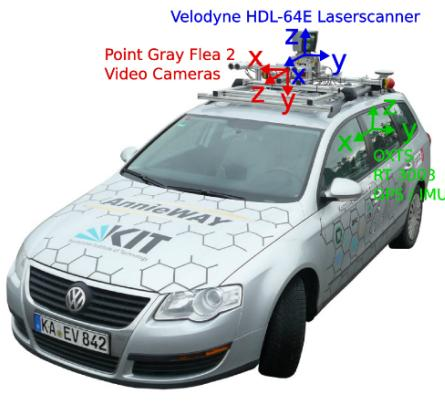<br />
(a)</p>
<p>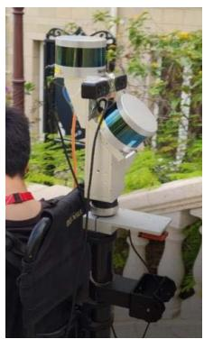<br />
(b)<br />
Fig. 2. (a) Recording platform used by the KITTI benchmark. The platform is equipped with four stereo camera systems (grayscale and color), a Velodyne HDL-64E laser scanner and a high accuracy OXTS RT 3003 localization system for the ground truth acquisition. The data from the Velodyne Lidar are employed in our method. (b) Our kylin backpack.</p>
<p>The major sensors of the Kylin backpack included: Velodyne VLP-16 Lidar, Mynak D1000-IR-120 color binocular camera, Xsens-300 IMU, and a power communi-cation module. An example of the mobile data collection is presented in Fig. 9. The average speed of the backpack was 1 m/s, and the data collection and algorithm running speed were both 10 Hz. There were two Lidars installed on the backpack. In this experiment, only the horizontal Lidar and the left camera of the binocular camera were used, and the images were <math xmlns="http://www.w3.org/1998/Math/MathML" display="inline"><mrow><mn>6</mn><mn>4</mn><mn>0</mn><mo>&#x000D7;</mo><mn>4</mn><mn>8</mn><mn>0</mn></mrow></math> , respectively. The backpack was not equipped with a GPS device, so there was no true value of the trajectory.</p>
<p>The experiment is implemented on a laptop with Intel i7-7700HQ CPU (2.8 GHz) and 8GB RAM, on top of the robot operating system (ROS) [35] in Ubuntu 16.04. Moreover, the laser data is logged at 10 Hz. The speed at 0.1 s per scan is the demand of the real-time processing.</p>
<h2>A. Accuracy Evaluation of Weighted NDT and Keyframe Strategies</h2>
<p>We have introduced two Lidar matching methods: classic NDT and weighted NDT (wNDT), and two key frame strategies: Scan2Scan and Scan2Key in detail. To fully illustrate the accuracy the wNDT and key frame strategy, we tested the KITTI data set. The grid size of NDT is set to 1m, and the key frame selection threshold of Scan2Key is <math xmlns="http://www.w3.org/1998/Math/MathML" display="inline"><mrow><mo stretchy="false">&#x00028;</mo><msub><mi>&#x003B5;</mi><mrow><mi>d</mi><mi>i</mi><mi>s</mi></mrow></msub><mo>&#x0002C;</mo><msub><mi>&#x003B5;</mi><mrow><mi>d</mi><mi>e</mi><mi>g</mi></mrow></msub><mo>&#x0002C;</mo></mrow></math> <math xmlns="http://www.w3.org/1998/Math/MathML" display="inline"><mrow><msub><mi>&#x003B5;</mi><mrow><mi>t</mi></mrow></msub><mo stretchy="false">&#x00029;</mo><mo>&#x0003D;</mo><mo stretchy="false">&#x00028;</mo><mn>1</mn><mn>0</mn><mrow><mi mathvariant="normal">m</mi></mrow><mo>&#x0002C;</mo><mn>1</mn><msup><mn>0</mn><mrow><mo>&#x02218;</mo></mrow></msup><mo>&#x0002C;</mo><mn>1</mn><mrow><mi mathvariant="normal">s</mi></mrow><mo stretchy="false">&#x00029;</mo></mrow></math> . Fig. 3 presents the accuracy of the Lidar odometry under the combination of the two matching methods (classic NDT and wNDT) and the two key frame strategies (Scan2Scan and Scan2Key).</p>
<p>In the comparison experiment between classic NDT and weighted NDT, when using the same key frame strategy, except for Scan2Scan’s sequence 6 and sequence 9, the offset error of remaining sequences has been significantly reduced after using the wNDT. For the same Scan2Scan, after using the wNDT, the average error of the 11 data set sequences is reduced from 1.955% to 1.723%; for the same Scan2key, the average errors of the 11 data set sequences were reduced from 1.041% to 0.910% after wNDT. Compared with the classic NDT, the wNDT reduced the error of DO by about 12%, which shows that the wNDT improves the accuracy of the odometry compared with traditional NDT.</p>
<p>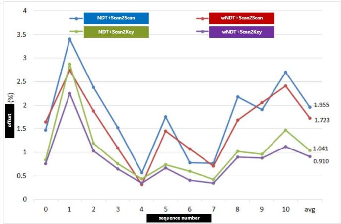<br />
Fig. 3. Accuracy comparison under different matching methods and key frame strategies.</p>
<p>In addition, for the experiments on the 11 data set sequence, the offset of Scan2key is significantly lower than that of Scan2Scan, and the average value of the former is only half of the latter under the same matching method. The experimental results fully demonstrate the effect of Scan2key strategy on the accuracy of the odometry. Therefore, in subsequent experiments, we will select the “wNDT+Scan2Key” combination as our Experimental parameter configuration.</p>
<h2>B. Comparison of Initial Pose</h2>
<p>Based on that the excellent performance of “wNDT+Scan2Key” configuration validated above, we set this configuration as the initial pose/odometry part of our NDT-LOAM. To compare the accuracy and efficiency of NDT-LOAM and ALOAM in initial pose estimation, we do experiments on the KITTI data set. In terms of feature points based odometry method, the LOAM algorithm proposed by Dr. Ji Zhang is an excellent representative, and it is constructed based on the matching of edge and plane feature points. LOAM consists of two parts: high-frequency odometry and low-frequency mapping. Here, we only adopt the positioning result of its high-frequency odometry as the initial pose. The open LOAM source code version is published very early and less accurate, and the author of the later version with higher accuracy does not open the source. The ALOAM, improved by the Hong Kong University of Science and Technology team is the most advanced version in Lidar-Only LOAM variants with open-source community essence that we can currently obtain. The ALOAM initial pose odometry is used as the representative of the feature points method odometry in the experiment. The accuracy comparison results of NDT-LOAM and ALOAM are shown in Fig. 4 and Tab. I.</p>
<p>TABLE I<br />
POSITION ERROR COMPARISON OF INITIAL POSE</p>
<table><tr><td>sequence</td><td>ALOAM (%)</td><td>NDT-LOAM (%)</td></tr><tr><td>#00</td><td>4.12</td><td>0.76</td></tr><tr><td>#01</td><td>3.44</td><td>2.25</td></tr><tr><td>#02</td><td>7.35</td><td>1.03</td></tr><tr><td>#03</td><td>3.04</td><td>0.65</td></tr><tr><td>#04</td><td>0.69</td><td>0.34</td></tr><tr><td>#05</td><td>4.29</td><td>0.67</td></tr><tr><td>#06</td><td>0.99</td><td>0.41</td></tr><tr><td>#07</td><td>2.24</td><td>0.34</td></tr><tr><td>#08</td><td>4.89</td><td>0.90</td></tr><tr><td>#09</td><td>6.06</td><td>0.88</td></tr><tr><td>#10</td><td>3.63</td><td>1.12</td></tr><tr><td>Average</td><td>4.913</td><td>0.910</td></tr></table>

<p>TABLE II</p>
<p>POSITION ERROR COMPARISON OF REFINED POSE</p>
<table><tr><td>sequence</td><td>ALOAM (%)</td><td>FLOAM[36] (%)</td><td>LOAM (%)</td><td>NDT-LOAM (%)</td></tr><tr><td>#00</td><td>0.88</td><td>0.92</td><td>0.78</td><td>0.79</td></tr><tr><td>#01</td><td>2.09</td><td>2.80</td><td>1.43</td><td>1.46</td></tr><tr><td>#02</td><td>4.67</td><td>1.56</td><td>0.92</td><td>1.09</td></tr><tr><td>#03</td><td>0.67</td><td>1.09</td><td>0.86</td><td>0.65</td></tr><tr><td>#04</td><td>0.33</td><td>1.43</td><td>0.71</td><td>0.31</td></tr><tr><td>#05</td><td>0.53</td><td>0.79</td><td>0.57</td><td>0.54</td></tr><tr><td>#06</td><td>0.56</td><td>0.72</td><td>0.65</td><td>0.56</td></tr><tr><td>#07</td><td>0.32</td><td>0.54</td><td>0.63</td><td>0.27</td></tr><tr><td>#08</td><td>1.05</td><td>1.11</td><td>1.12</td><td>1.04</td></tr><tr><td>#09</td><td>0.80</td><td>1.28</td><td>0.77</td><td>0.74</td></tr><tr><td>#10</td><td>1.17</td><td>1.77</td><td>0.79</td><td>1.12</td></tr><tr><td>Average</td><td>1.809</td><td>1.27</td><td>-</td><td>0.899</td></tr></table>

<p>Tab. I (only odometry part is considered for each algorithm) shows that the positioning errors of the 11 sequences of NDT-LOAM are significantly lower, and the average error of NDT-LOAM is only 1/5 of the feature points method odometry. Fig. 4 shows the trajectories of 11 sequences, the dotted line is the ground truth from GPS/INS, the blue solid line is the trajectory of ALOAM’s feature points method odometry, and the orange solid line is the trajectory of NDT-LOAM. As illustrated in Fig. 4, the trajectory of NDT-LOAM is closer to and matches well with the ground truth for all 11 sequences, while that of ALOAM deviates largely from GT. So, it can be concluded that the positioning accuracy of NDT-LOAM is significantly higher than that of features point method odometry in estimating initial pose due to the effectiveness of the proposed wNDT.</p>
<h2>C. Evaluation in Refined Pose</h2>
<p>What’s more, LFA in LOAM is adopted as the mapping part. We carry out experiments on the 11 sequences of KITTI using NDT-LOAM and record the relative errors. Fig. 5 presents the point cloud map from NDT-LOAM and pose trajectories from LeGO-LOAM/NDT-LOAM on three representative KITTI sequences of #00, #05 and #09. The loop-closure is closed in the LeGO-LOAM experiment. In the trajectory picture, the dashed line is GT value, and the green solid line is the positioning track of NDT-LOAM while the blue line is from LeGO-LOAM. The DNT-LOAM trace is closer to the GT of the motion than LeGO-LOAM, showing a relatively high level of accuracy, the resultant three-dimensional point cloud map is intuitive and accurate, and the movement is consistent. Tab. III lists several metrics to evaluate the performance of NDT-LOAM and LeGO-LOAM. Our NDT-LOAM outperforms LeGO-LOAM by almost 50%.</p>
<p>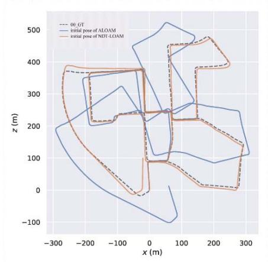</p>
<p>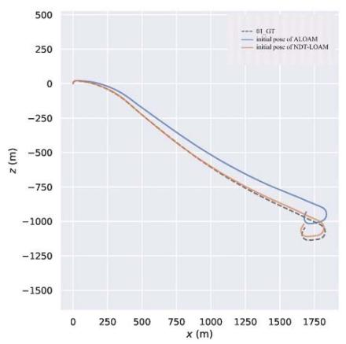</p>
<p>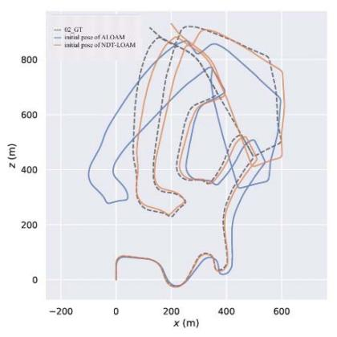</p>
<p>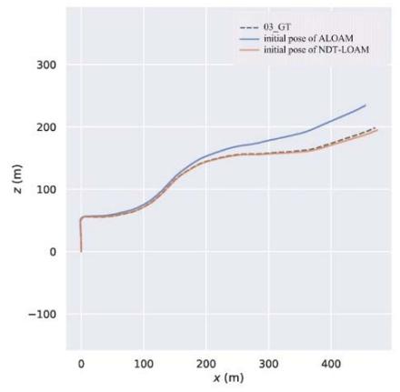</p>
<p>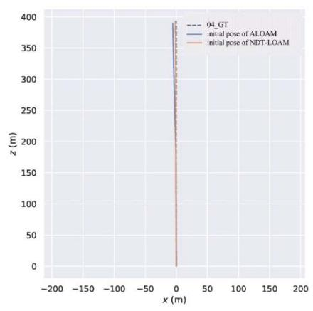</p>
<p>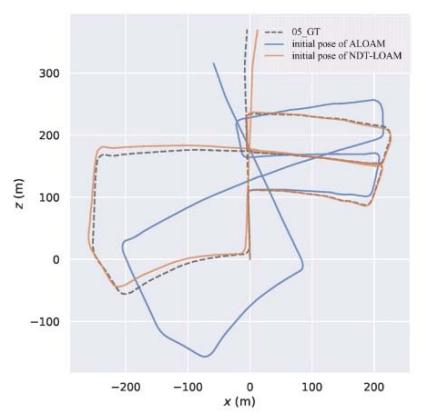</p>
<p>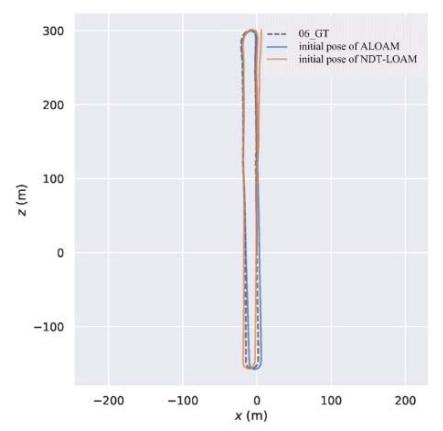</p>
<p>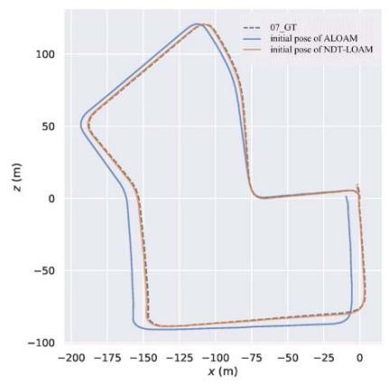</p>
<p>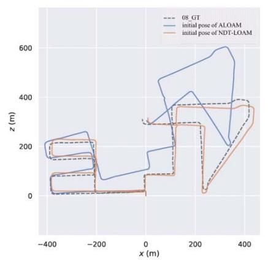</p>
<p>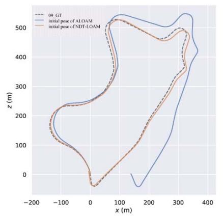</p>
<p>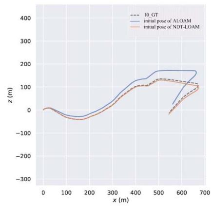<br />
Fig. 4. The initial pose/ odometry trajectory comparison between ALOAM and NDT-LOAM.</p>
<p>Path Length [m]<br />
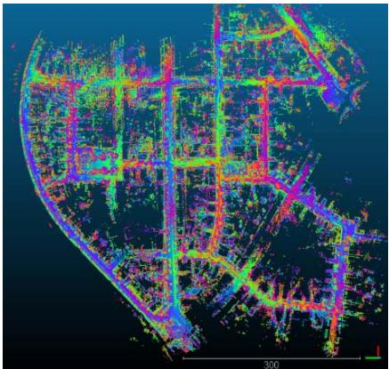</p>
<p>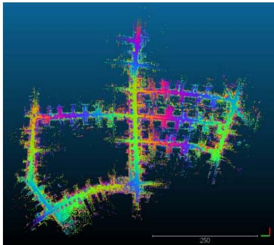</p>
<p>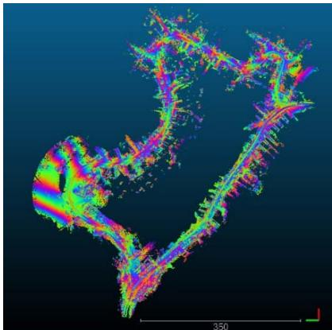</p>
<p>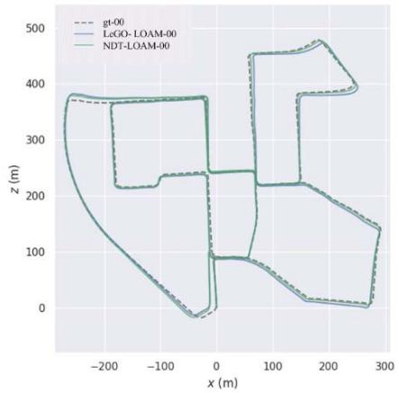</p>
<p>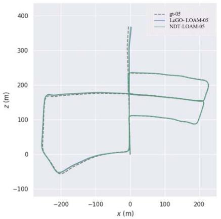</p>
<p>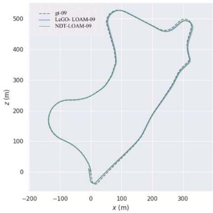<br />
Fig. 5. Point cloud map from NDT-LOAM and pose trajectories from LeGO-LOAM/NDT-LOAM on #00, #05 and #09 KITTI sequences.</p>
<p>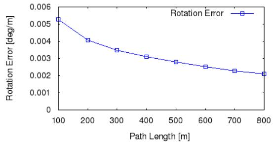</p>
<p>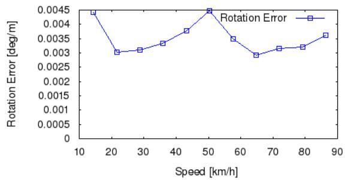</p>
<p>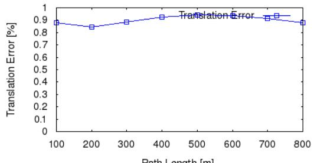</p>
<p>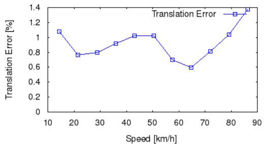<br />
Fig. 6. Average error ratio of NDT-LOAM on 11 KITTI sequence.</p>
<p>Fig. 6 shows the average angle error ratio and average distance error ratio of the 11 sequences for NDT-LOAM algorithm. It can be seen that the vehicle speeds of the 11 sequences are all between 15km/h and 85km/h. The average angle error ratio decreases as the length of the distance interval increases. It shows a certain wave with the change of the speed interval mobility, and the average angle error of each interval is between [0.0025 degrees/m, 0.0045 degrees/m]. Average position error ratio remains stable as the length of the distance interval increases and the average position error of each interval is between [0.8%, 0.95%] (the total average position error is 0.899%), indicating that the overall positioning accuracy is relatively stable. The average position error ratio presents a certain degree of volatility, and the average position error of each interval is between [0.6%, 1.4%].</p>
<p>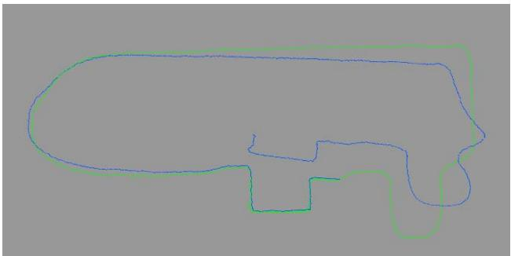<br />
(a) Pose trajectories from NDT-LOAM/ LeGO-LOAM on #K1</p>
<p>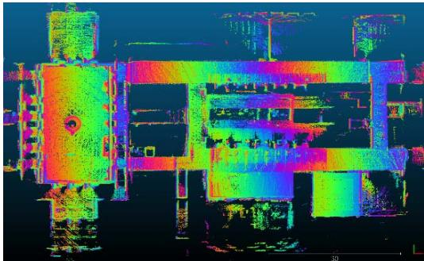<br />
(b) Point cloud map from NDT-LOAM on #K1</p>
<p>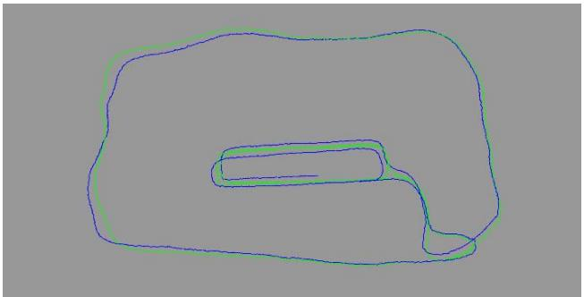<br />
(c) Pose trajectories from NDT-LOAM/ LeGO-LOAM on #K1</p>
<p>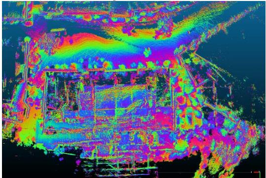<br />
(d) Point cloud map from NDT-LOAM on #K2</p>
<p>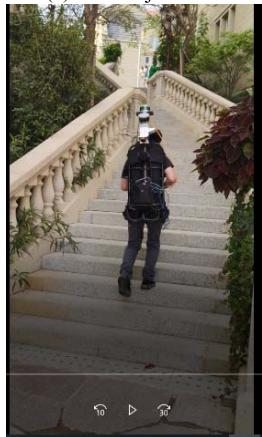</p>
<p>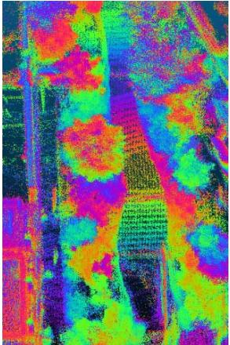<br />
(e) Corresponding point cloud in left ascending staircase of (d)</p>
<p>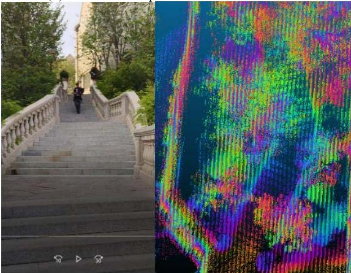<br />
(f) Corresponding point cloud in right descending staircase of (d)<br />
Fig. 7. Pose trajectories from NDT-LOAM/ LeGO-LOAM and point cloud map from NDT-LOAM and on Kylin backpack data.</p>
<p>TABLE III<br />
ABSOLUTE POSE ERROR (m) OF NDT-LOAM AND LeGO-LOAM ON #00, #05 AND #09 KITTI SEQUENCES</p>
<table><tr><td rowspan="2">sequence</td><td colspan="3">LeGO-LOAM</td><td colspan="3">NDT-LOAM</td></tr><tr><td>Mean</td><td>Std</td><td>RMSE</td><td>Mean</td><td>Std</td><td>RMSE</td></tr><tr><td>#00</td><td>5.16</td><td>2.87</td><td>5.98</td><td>3.38</td><td>1.97</td><td>3.98</td></tr><tr><td>#05</td><td>2.65</td><td>1.34</td><td>2.97</td><td>1.99</td><td>1.32</td><td>2.39</td></tr><tr><td>#09</td><td>2.00</td><td>1.12</td><td>2.30</td><td>1.38</td><td>0.78</td><td>1.58</td></tr></table>

<p>TABLE IV<br />
TRAJECTORY ERRORS OF NDT-LOAM/ LeGO-LOAM</p>
<table><tr><td rowspan="2">sequence</td><td rowspan="2">scene</td><td rowspan="2">frame</td><td rowspan="2">distance(m)</td><td colspan="2">trajectory error(m)</td></tr><tr><td>NDT- LOAM</td><td>LeGO- LOAM</td></tr><tr><td>#K1</td><td>indoor</td><td>2007</td><td>254.58</td><td>0.20</td><td>7.99</td></tr><tr><td>#K2</td><td>indoor &amp; outdoor</td><td>3877</td><td>432.75</td><td>0.25</td><td>2.60</td></tr></table>

<p>The average position errors of NDT-LOAM and ALOAM/ FLOAM/LOAM are shown in Tab. II. Both ALOAM and NDT-LOAM in this article run at a rate of 10 Hz in real-time level. The results of LOAM are from the original paper, the author sacrifices efficiency for accuracy, and the corresponding speed is 1 Hz. The results of FLOAM are from the paper [36]. From the position error data in Tab. II, we can see the position accuracy of NDT-LOAM on sequence #00, #03, #04, #05, #06, #07, #09 is slightly higher within 0.8% position errors. While the positioning accuracy of #01, #02, #08, #10 is poor, and the position error is higher than 1.0%. #01 is the highway environment, with few reference targets on both sides of the road, and vehicle movement speed is high (the average speed of #01 is 20m/s, and the value of other data is about 10m/s), which heavily affects the positioning accuracy. The acquisition platform sensors of #00, #01, #02 have poor external calibration accuracy, and this is a key factor that results in big error on sequence #01, #02. The real motion value of #08 has an obvious error in the starting position, reaching to 5 m, which influences the accuracy assessment of #08. Through the observation on the continuous playback of #10 camera pictures, we find that there is a section of data captured on rugged roads where have a large vibration at the level, which may be which may be an important factor affecting the error. Under the same real-time efficiency conditions, the position accuracy of NDT-LOAM is much higher than ALOAM and FLOAM. The position error of the 7 sequence data #03-#09 of NDT-LOAM is slightly lower than LOAM, and the position error of the 4 sequences #01, #02, #10 is slightly higher than LOAM. The overall position of the NDT-LOAM and the original LOAM is basically at the same level. The evo tool is a popular Python package for the evaluation of odometry and SLAM. We also use the tool evaluation the absolute pose error of NDT-LOAM and LeGO-LOAM on #00, #05 and #09 KITTI sequences, and Tab. III lists the result. Our NDT-LOAM outperforms LeGO-LOAM by almost 50%.</p>
<p>TABLE V<br />
RUNTIME OF MODULES FOR PROCESSING ONE SCAN (ms)</p>
<table><tr><td rowspan="2">sequence</td><td colspan="4">LeGO-LOAM(ms)</td><td colspan="3">NDT-LOAM(ms)</td></tr><tr><td>Segmentation</td><td>Extraction</td><td>Odometry</td><td>Mapping</td><td>DLO</td><td>LFA-Extraction</td><td>LFA-Mapping</td></tr><tr><td>#04</td><td>21.5</td><td>2.2</td><td>8.2</td><td>106.4</td><td>48.2</td><td>42.9</td><td>86.9</td></tr><tr><td>#06</td><td>22.7</td><td>2.5</td><td>8.9</td><td>147.4</td><td>46.8</td><td>42.9</td><td>107.8</td></tr><tr><td>#07</td><td>21.6</td><td>2.4</td><td>7.4</td><td>76.4</td><td>38.0</td><td>37.1</td><td>89.8</td></tr><tr><td>#09</td><td>55.6</td><td>2.0</td><td>7.2</td><td>96.6</td><td>44.5</td><td>40.6</td><td>90.2</td></tr><tr><td>K1</td><td>6.2</td><td>2.5</td><td>4.7</td><td>81.3</td><td>9.9</td><td>12.1</td><td>103.7</td></tr></table>

<h2>D. Kylin Backpack Experiment</h2>
<p>With our Kylin backpack, we collected two sequences #K1 and #K2 to assess the proposed method. The #K1 data is from indoor space, while #K2 data includes indoor and outdoor scenes. Due to the lack of high-precision GPS location as the pose ground truth, we consciously walk out of a relatively regular area at the beginning and end of the path, and use the position offset of the beginning and the end as the pose trajectory error of the NDT-LOAM/ LeGO-LOAM method. Some important threshold parameters used in the NDT-LOAM experiment were set as follows: the distance threshold and angle threshold of the key frame selection were 2m and 10 , respectively.</p>
<p>Quantitative results of the NDT-LOAM/ LeGO-LOAM experiment are shown in Tab. IV. The trajectory errors of our method are 0.2 m and 0.25 m for #K1 and #K2 respectively, while LeGO-LOAM has almost 8 m trajectory error for sequence #K1 and 2.6 m error for sequence #K2.</p>
<p>More qualitative results are shown in Fig. 7. Blue lines in Fig. 7(a) and 7(c) are the trajectory of LeGO-LOAM, and the green lines are our NDT-LOAM. Our method has lower trajectory error than LeGO-LOAM. Fig. 7(b) and 7(d) show the point cloud map from NDT-LOAM, while Fig. 7(e) and 7(f) show the collection scenes and corresponding point clouds of ascending and descending stairs of #K2. These results indicate that our algorithm has high accuracy and strong robustness.</p>
<h2>E. Evaluation of Runtime Performance</h2>
<p>We evaluate the time consumption of our method and the baseline LeGO-LOAM. It is concluded that LeGO-LOAM outperforms LOAM in real-time performance [18], so we ignore the comparison with LOAM in this part, readers can reference to the paper [18] for more details. As shown in Tab. V, LeGO-LOAM consists of segmentation, extraction, odometry and mapping modules, and our NDT-LOAM includes DLO, LFA-extraction and LFA-Mapping. Mapping is the most timeconsuming module. Since our initial pose is close to the optimized one, it doesn’t cost much time to find the refined pose and can run in real-time. In some cases (such as #4, #6, and #9), mapping module takes smaller time than that of LeGO-LOAM. Overall, we can see that the NDT-LOAM algorithm achieved a high level of accuracy and resolved the conflict between accuracy and efficiency.</p>
<h2>V. CONCLUSION</h2>
<p>In the concept “Simultaneous Localization and Mapping”, the high localization accuracy and the real-time processing are equally important. Some previous methods gain a higher odometry accuracy at the expense of more time consumption than the real-time processing. In this paper we propose an efficient Lidar odometry method using an improved wNDT and a keyframe matching strategy. In the experiments, we tested NDT-LOAM on the KITTI odometry dataset and compare it with the state-of-the-art algorithm LOAM. The results illustrate that NDT-LOAM is an efficient odometry method with low drift.</p>
<p>Since the current method does not involve loop closure and graph optimization in the backend of SLAM, our future work is to improve the approach to fix motion estimation drift by closing the loop. Also, we will develop the multi-sensor (Visual/Lidar/IMU) integration technology for further reducing the motion estimation drift.</p>
<h2>REFERENCES</h2>
<p>[1] T. Bailey and H. Durrant-Whyte, “Simultaneous localization and mapping (SLAM): Part II,” IEEE Robot. Autom. Mag., vol. 13, no. 3, pp. 108–117, Sep. 2006.</p>
<p>[2] C. Cadena et al., “Past, present, and future of simultaneous localization and mapping: Toward the robust-perception age,” IEEE Trans. Robot., vol. 32, no. 6, pp. 1309–1332, Dec. 2016.</p>
<p>[3] J. Fuentes-Pacheco, J. Ruiz-Ascencio, and J. M. Rendón-Mancha, “Visual simultaneous localization and mapping: A survey,” Artif. Intell. Rev., vol. 43, no. 1, pp. 55–81, 2015.</p>
<p>[4] X. Gao, R. Wang, N. Demmel, and D. Cremers, “LDSO: Direct sparse odometry with loop closure,” in Proc. IEEE/RSJ Int. Conf. Intell. Robots Syst. (IROS), Oct. 2018, pp. 2198–2204.</p>
<p>[5] P. Mountney, D. Stoyanov, A. Davison, and G.-Z. Yang, “Simultaneous stereoscope localization and soft-tissue mapping for minimal invasive surgery,” in Proc. Int. Conf. Med. Image Comput. Comput.-Assist. Intervent., 2006, pp. 347–354.</p>
<p>[6] B. Zhou et al., “Crowdsourcing-based indoor mapping using smartphones: A survey,” ISPRS J. Photogramm. Remote Sens., vol. 177, pp. 131–146, Jul. 2021.</p>
<p>[7] X. Liu et al., “Kalman filter-based data fusion of Wi-Fi RTT and PDR for indoor localization,” IEEE Sensors J., vol. 21, no. 6, pp. 8479–8490, Mar. 2021.</p>
<p>[8] J. Chen et al., “A data-driven inertial navigation/Bluetooth fusion algorithm for indoor localization,” IEEE Sensors J., early access, Jun. 15, 2021, doi: 10.1109/JSEN.2021.3089516.</p>
<p>[9] A. J. Davison, I. D. Reid, N. D. Molton, and O. Stasse, “MonoSLAM: Real-time single camera SLAM,” IEEE Trans. Pattern Anal. Mach. Intell., vol. 29, no. 6, pp. 1052–1067, Jun. 2007.</p>
<p>[10] R. Mur-Artal and J. D. Tardós, “ORB-SLAM2: An open-source slam system for monocular, stereo, and RGB-D cameras,” IEEE Trans. Robot., vol. 33, no. 5, pp. 1255–1262, Oct. 2017.</p>
<p>[11] J. Engel, V. Koltun, and D. Cremers, “Direct sparse odometry,” IEEE Trans. Pattern Anal. Mach. Intell., vol. 40, no. 3, pp. 611–625, Mar. 2018.</p>
<p>[12] J. Li et al., “Attention-SLAM: A visual monocular SLAM learning from human gaze,” IEEE Sensors J., vol. 21, no. 5, pp. 6408–6420, Mar. 2020.</p>
<p>[13] J.-E. Deschaud, “IMLS-SLAM: Scan-to-model matching based on 3D data,” in Proc. IEEE Int. Conf. Robot. Autom. (ICRA), May 2018, pp. 2480–2485.</p>
<p>[14] W. Hess, D. Kohler, H. Rapp, and D. Andor, “Real-time loop closure in 2D LIDAR SLAM,” in Proc. IEEE Int. Conf. Robot. Autom. (ICRA), May 2016, pp. 1271–1278.</p>
<p>[15] J. Zhang and S. Singh, “Low-drift and real-time lidar odometry and mapping,” Auton. Robots, vol. 41, no. 2, pp. 401–416, Feb. 2017.</p>
<p>[16] X. Chen, A. Milioto, E. Palazzolo, P. Giguere, J. Behley, and C. Stachniss, “SuMa++: Efficient LiDAR-based semantic SLAM,” in Proc. IEEE/RSJ Int. Conf. Intell. Robots Syst. (IROS), Nov. 2019, pp. 4530–4537.</p>
<p>[17] J. Lin and F. Zhang, “Loam livox: A fast, robust, high-precision LiDAR odometry and mapping package for LiDARs of small FoV,” in Proc. IEEE Int. Conf. Robot. Automat. (ICRA), 2020, pp. 3126–3131.</p>
<p>[18] T. Shan and B. Englot, “LeGO-LOAM: Lightweight and groundoptimized lidar odometry and mapping on variable terrain,” in Proc. IEEE/RSJ Int. Conf. Intell. Robots Syst. (IROS), 2018, pp. 4758–4765.</p>
<p>[19] T. Shan, B. Englot, D. Meyers, W. Wang, C. Ratti, and D. Rus, “LIO-SAM: Tightly-coupled lidar inertial odometry via smoothing and mapping,” in Proc. IEEE/RSJ Int. Conf. Intell. Robots Syst. (IROS), 2020, pp. 5135–5142.</p>
<p>[20] Y. Pan, P. Xiao, Y. He, Z. Shao, and Z. Li, “MULLS: Versatile LiDAR SLAM via multi-metric linear least square,” 2021, arXiv:2102.03771.</p>
<p>[21] S. Chen et al., “Extrinsic calibration of 2D laser rangefinders based on a mobile sphere,” Remote Sens., vol. 10, no. 8, p. 1176, Jul. 2018.</p>
<p>[22] S. Thrun and M. Montemerlo, “The graph SLAM algorithm with applications to large-scale mapping of urban structures,” Int. J. Robot. Res., vol. 25, nos. 5–6, pp. 403–429, 2006.</p>
<p>[23] S. Kohlbrecher, O. von Stryk, J. Meyer, and U. Klingauf, “A flexible and scalable SLAM system with full 3D motion estimation,” in Proc. IEEE Int. Symp. Saf., Secur., Rescue Robot., Nov. 2011, pp. 155–160.</p>
<p>[24] G. Grisetti, C. Stachniss, and W. Burgard, “Improved techniques for grid mapping with rao-blackwellized particle filters,” IEEE Trans. Robot., vol. 23, no. 1, p. 34, Feb. 2007.</p>
<p>[25] R. Vincent, B. Limketkai, and M. Eriksen, “Comparison of indoor robot localization techniques in the absence of GPS,” Proc. SPIE, vol. 7664, 2010.</p>
<p>[26] K. Konolige, G. Grisetti, R. Kümmerle, W. Burgard, B. Limketkai, and R. Vincent, “Efficient sparse pose adjustment for 2D mapping,” in Proc. IEEE/RSJ Int. Conf. Intell. Robots Syst., Oct. 2010, pp. 22–29.</p>
<p>[27] M. Oelsch, M. Karimi, and E. Steinbach, “R-LOAM: Improving LiDAR odometry and mapping with point-to-mesh features of a known 3D reference object,” IEEE Robot. Autom. Lett., vol. 6, no. 2, pp. 2068–2075, Apr. 2021.</p>
<p>[28] P. Biber and W. Strasser, “The normal distributions transform: A new approach to laser scan matching,” in Proc. IEEE/RSJ Int. Conf. Intell. Robots Syst. (IROS), Jun. 2003, pp. 2743–2748.</p>
<p>[29] M. Magnusson, “The three-dimensional normal-distributions transform: an efficient representation for registration surface analysis and loop detection,” Ph.D. dissertation, Örebro Univ., Örebro, Sweden, 2009.</p>
<p>[30] K. F. West, B. N. Webb, J. R. Lersch, S. Pothier, J. M. Triscari, and A. E. Iverson, “Context-driven automated target detection in 3D data,” in Proc. 14th Autom. Target Recognit., 2004, pp. 133–144.</p>
<p>[31] J. Demantké, C. Mallet, N. David, and B. Vallet, “Dimensionality based scale selection in 3D lidar point clouds,” Int. Arch. Photogramm., Remote Sens. Spatial Inf. Sci., vols. 38-5/W12, pp. 97–102, Sep. 2012.</p>
<p>[32] K. Madsen, H. Nielsen, and O. Tingleff, Methods for Non-Linear Least Squares Problems, 2nd ed. 2004.</p>
<p>[33] A. Geiger, P. Lenz, C. Stiller, and R. Urtasun, “Vision meets robotics: The KITTI dataset,” Int. J. Robot. Res., vol. 32, pp. 1231–1237, Sep. 2013.</p>
<p>[34] A. Geiger, P. Lenz, and R. Urtasun, “Are we ready for autonomous driving? The KITTI vision benchmark suite,” in Proc. IEEE Conf. Comput. Vis. Pattern Recognit., Jun. 2012, pp. 3354–3361.</p>
<p>[35] M. Quigley et al., “ROS: An open-source robot operating system,” in Proc. ICRA Workshop Open Source Softw., 2009, p. 5.</p>
<p>[36] L. Li et al., “SA-LOAM: Semantic-aided LiDAR SLAM with loop closure,” 2021, arXiv:2106.11516.</p>
<p><br />
Shoubin Chen received the Ph.D. degree in photogrammetry and remote sensing from Wuhan University, Wuhan, China, in 2020. He is currently a Postdoctoral Researcher with the School of Architecture and Urban Planning, Shenzhen University, Shenzhen, China. His research interests include robot navigation, LiDAR/Visual SLAM, and multi-sensor fusion.</p>
<p></p>
<p>Hao Ma received the M.S. degree from Central China Normal University, China, in 2014, and the Ph.D. degree from Wuhan University, China, in 2018. She is now doing research with the College of Computer Science and Software Engineering, Shenzhen University, as a Postdoctoral Fellow. Her research interests include binocular stereo matching, multi-source data registration, and StlyeGAN-based image generation.</p>
<p>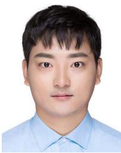</p>
<p>Changhui Jiang (Student Member, IEEE) was born in Xinghua, China, in 1992. He received the B.S. degree from Soochow University, Suzhou, China, in 2014, and the Ph.D. degree from the Nanjing University of Science and Technology, Nanjing, China, in 2019. From December 2017 to November 2018, he studied as a Visiting Ph.D. student sponsored by the China Scholarship Council, Finnish Geo-spatial Research Institute (FGI). He has authored or coauthored more than 20 journal or conference papers in LiDAR, GNSS, and inertial navigation system. He holds five patents in GNSS and inertial navigation system. His research interests include positioning location and navigation for autonomous driving vehicles and personal smartphone in urban or super-urban signals challenging environments.</p>
<p></p>
<p>Baoding Zhou received the Ph.D. degree in photogrammetry and remote sensing from Wuhan University, Wuhan, China, in 2015. He is currently an Assistant Professor with the College of Civil and Transportation Engineering, Shenzhen University, China. His research interests include indoor localization, indoor mapping, intelligent sensing, and intelligent transportation systems.</p>
<p></p>
<p>Weixing Xue was born in Lu Yi, Henan, China, in 1990. He received the Ph.D. degree in geodesy and survey engineering from the School of Geodesy &amp; Geomatics, Wuhan University, in 2019. He is currently a Postdoctoral Researcher with the Shenzhen Key Laboratory of Spatial Smart Sensing and Service, College of Civil Engineering, Shenzhen University, Shenzhen, China. His research interests include seamless positioning and navigation, multi sensor information fusion and data processing theory, and precision engineering measurement.</p>
<p></p>
<p>Zhenzhong Xiao was born in Shandong, China, in 1980. He received the Ph.D. degree from Xi’an Jiaotong University, Xi’an, China. He is currently one of the founders and the Chief Technology Officer of Orbbec Inc. His research interests include 3D camera research and development, 3D perception, artificial intelligence, and computer vision.</p>
<p></p>
<p>Qingquan Li received the Ph.D. degree in photogrammetry and remote sensing from the Wuhan Technical University of Surveying and Mapping. He is the President of Shenzhen University. For over 20 years, Dr. Li has been engaged in the developments of surveying engineering and their innovation applications, contributing especially to the principles and practices of dynamic precision engineering survey. His research interests include the integration of GNSS, RS and GIS, precision engineering survey, and spatiotemporal big data analytics. His work has been recognized with a variety of distinctions. He is an Academician of IEAS, a member of Committee at Science and Technology Commission, Ministry of Education, China, and the Chief-Editor of the Journal of Geodesy and . His research was awarded National Scientific and Technological Progress Second Prize (China) and MoE Scientific and Technological Progress First Prize (China).</p>
<div class="doc-foot">本页由 <code>md/2022_NDT-LOAM__A_Real-Time_Lidar_Odometry_and_Mapping_With_We.md</code> 预渲染生成。公式以 MathML 呈现，浏览器原生渲染，不依赖外部脚本或字体 CDN。</div>
</main>
</body>
</html>
